Analysis
20 marzo, 2020
1 Análisis PPM-S
2 Wave 01
library(sjPlot)
library(dplyr)
library(lavaan)
library(stargazer)
library(corrplot)
library(psych)
library(knitr)
library(kableExtra)data01 <- sjlabelled::read_spss(path = "input/data/original/Estudio_3_ola1.sav",verbose = FALSE)
dat01 <- data01 %>% filter(Intro==1,Finished==1) %>% select(starts_with("meritv01")) %>% na.omit()
dat02 <- data01 %>% filter(Intro==1,Finished==1) %>% select(starts_with("meritv02")) %>% na.omit()
dat03 <- data01 %>% filter(Intro==1,Finished==1) %>% select(starts_with("meritv03_p")) %>% na.omit()
# - Nos quedamos solamente con los casos que ACEPTARON participar y terminaron el cuestionario.
# - Para dejar una base que contenga solamente los casos que tienen información completa en los ítems usamos na.omit()
dat04 <- data01 %>% filter(Intro==1) %>%
select(starts_with("meritv01"),
starts_with("meritv02"),
starts_with("meritv03_p"),
starts_with("FL_21_DO"))
dat04$grupo <- NA
dat04$grupo[dat04$FL_21_DO_merit_perc_pref_julio19v01==1] <- 1
dat04$grupo[dat04$FL_21_DO_merit_perc_pref_julio19v02==1] <- 2
dat04$grupo[dat04$FL_21_DO_merit_perc_pref_julio19v03==1] <- 3
dat04$perc_effort <- rowSums(dat04[,c(matches(match = "perc_effort",vars = names(dat04)))],na.rm = TRUE)
dat04$perc_talent <- rowSums(dat04[,c(matches(match = "perc_talent",vars = names(dat04)))],na.rm = TRUE)
dat04$perc_wpart <- rowSums(dat04[,c(matches(match = "perc_wpart" ,vars = names(dat04)))],na.rm = TRUE)
dat04$perc_netw <- rowSums(dat04[,c(matches(match = "perc_netw" ,vars = names(dat04)))],na.rm = TRUE)
dat04$pref_effort <- rowSums(dat04[,c(matches(match = "pref_effort",vars = names(dat04)))],na.rm = TRUE)
dat04$pref_talent <- rowSums(dat04[,c(matches(match = "pref_talent",vars = names(dat04)))],na.rm = TRUE)
dat04$pref_wpart <- rowSums(dat04[,c(matches(match = "pref_wpart" ,vars = names(dat04)))],na.rm = TRUE)
dat04$pref_netw <- rowSums(dat04[,c(matches(match = "pref_netw" ,vars = names(dat04)))],na.rm = TRUE)
dat04[dat04==0] <- NA2.1 Version 01: Fixed order by perception / preferences (N=697)
- Percepcion esfuerzo
- Percepcion talento
- Percepcion familia rica
- Percepcion redes
- Preferencia esfuerzo
- Preferencia talento
- Preferencia familia rica
- Preferencia redes
| Statistic | N | Mean | St. Dev. | Min | Pctl(25) | Pctl(75) | Max |
| meritv01_perc_effort | 697 | 3.164 | 1.360 | 1 | 2 | 4 | 5 |
| meritv01_perc_talent | 697 | 2.981 | 1.122 | 1 | 2 | 4 | 5 |
| meritv01_perc_wpart | 697 | 3.603 | 1.353 | 1 | 3 | 5 | 5 |
| meritv01_perc_netw | 697 | 3.740 | 1.255 | 1 | 3 | 5 | 5 |
| meritv01_pref_effort | 697 | 3.908 | 1.225 | 1 | 3 | 5 | 5 |
| meritv01_pref_talent | 697 | 3.268 | 1.168 | 1 | 3 | 4 | 5 |
| meritv01_pref_wpart | 697 | 2.555 | 1.117 | 1 | 2 | 3 | 5 |
| meritv01_pref_netw | 697 | 2.337 | 1.057 | 1 | 1 | 3 | 5 |
cor01<-polychoric(dat01)
corrplot(cor01$rho,method = "color" ,type = "upper", order = "hclust", tl.col = "black", tl.srt = 45,addCoef.col = "black",diag = FALSE)
model01 <- '
perc_merit=~meritv01_perc_effort+meritv01_perc_talent
perc_nmerit=~meritv01_perc_wpart+meritv01_perc_netw
pref_merit=~meritv01_pref_effort+meritv01_pref_talent
pref_nmerit=~meritv01_pref_wpart+meritv01_pref_netw'
fit1_c <- cfa(model = model01,data = dat01,estimator="MLR") # Continuo/ estimador ML Robust
fit1_o <- cfa(model = model01,data = dat01,
ordered = c("meritv01_perc_effort","meritv01_perc_talent",
"meritv01_perc_wpart","meritv01_perc_netw",
"meritv01_pref_effort","meritv01_pref_talent",
"meritv01_pref_wpart","meritv01_pref_netw"))
#---------------------------------------------------#
# #summary(fit1_c,standardized=TRUE, fit.measures=TRUE)}
fitmeasures(fit1_c)[c("chisq.scaled","df","cfi","cfi.scaled","cfi.robust","rmsea","rmsea.scaled","rmsea.robust")]
semPlot::semPaths(object = fit1_c,what = "std",thresholds = FALSE, intercepts = FALSE,fade=FALSE, curve = 1.5)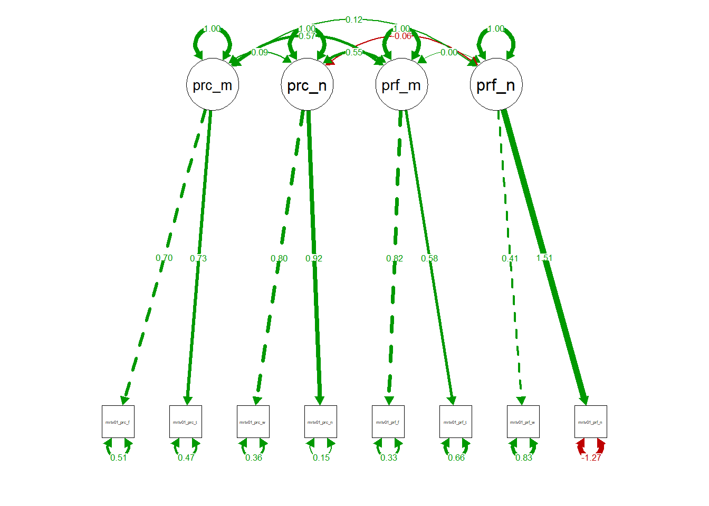
# #summary(fit1_o,standardized=TRUE, fit.measures=TRUE)
fitmeasures(fit1_o)[c("chisq.scaled","df","cfi","cfi.scaled","cfi.robust","rmsea","rmsea.scaled","rmsea.robust")]
semPlot::semPaths(object = fit1_o,what = "std",thresholds = FALSE, intercepts = FALSE,fade=FALSE, curve = 1.5)
## chisq.scaled df cfi cfi.scaled cfi.robust rmsea rmsea.scaled
## 42.93480226 14.00000000 0.97948028 0.97736086 0.98021257 0.05812794 0.05445401
## rmsea.robust
## 0.05695600
## chisq.scaled df cfi cfi.scaled cfi.robust rmsea rmsea.scaled
## 46.11414265 14.00000000 0.99763575 0.99207488 NA 0.03794574 0.05740894
## rmsea.robust
## NA#summary: good fit, heywood case item 8.
2.2 Version 02: Fixed order, by topic (N=706)
- Percepcion esfuerzo
- Preferencia esfuerzo
- Percepcion talento
- Preferencia talento
- Percepcion familia rica
- Preferencia familia rica
- Percepcion redes
- Preferencia redes
| Statistic | N | Mean | St. Dev. | Min | Pctl(25) | Pctl(75) | Max |
| meritv02_perc_effort | 706 | 3.105 | 1.399 | 1 | 2 | 4 | 5 |
| meritv02_pref_effort | 706 | 3.741 | 1.339 | 1 | 3 | 5 | 5 |
| meritv02_perc_talent | 706 | 3.035 | 1.111 | 1 | 2 | 4 | 5 |
| meritv02_pref_talent | 706 | 3.146 | 1.149 | 1 | 2 | 4 | 5 |
| meritv02_perc_wpart | 706 | 3.661 | 1.364 | 1 | 3 | 5 | 5 |
| meritv02_pref_wpart | 706 | 2.742 | 1.209 | 1 | 2 | 4 | 5 |
| meritv02_perc_netw | 706 | 3.728 | 1.218 | 1 | 3 | 5 | 5 |
| meritv02_pref_netw | 706 | 2.385 | 1.109 | 1 | 1 | 3 | 5 |
cor02<-polychoric(dat02)
corrplot(cor02$rho,method = "color", type = "upper", order = "hclust", tl.col = "black", tl.srt = 45,addCoef.col = "black",diag = FALSE)
model02 <- '
perc_merit=~meritv02_perc_effort+meritv02_perc_talent
perc_nmerit=~meritv02_perc_wpart+meritv02_perc_netw
pref_merit=~meritv02_pref_effort+meritv02_pref_talent
pref_nmerit=~meritv02_pref_wpart+meritv02_pref_netw'
fit2_c <- cfa(model = model02,data = dat02,estimator="MLR") # Continuo/ estimador ML Robust
fit2_o <- cfa(model = model02,data = dat02,ordered = c("meritv02_perc_effort","meritv02_perc_talent",
"meritv02_perc_wpart","meritv02_perc_netw",
"meritv02_pref_effort","meritv02_pref_talent",
"meritv02_pref_wpart","meritv02_pref_netw"))
#---------------------------------------------------#
#summary(fit2_c,standardized=TRUE, fit.measures=TRUE)
fitmeasures(fit2_c)[c("chisq.scaled","df","cfi","cfi.scaled","cfi.robust","rmsea","rmsea.scaled","rmsea.robust")]
semPlot::semPaths(object = fit2_c,what = "std",thresholds = FALSE, intercepts = FALSE,fade=FALSE, curve = 1.5)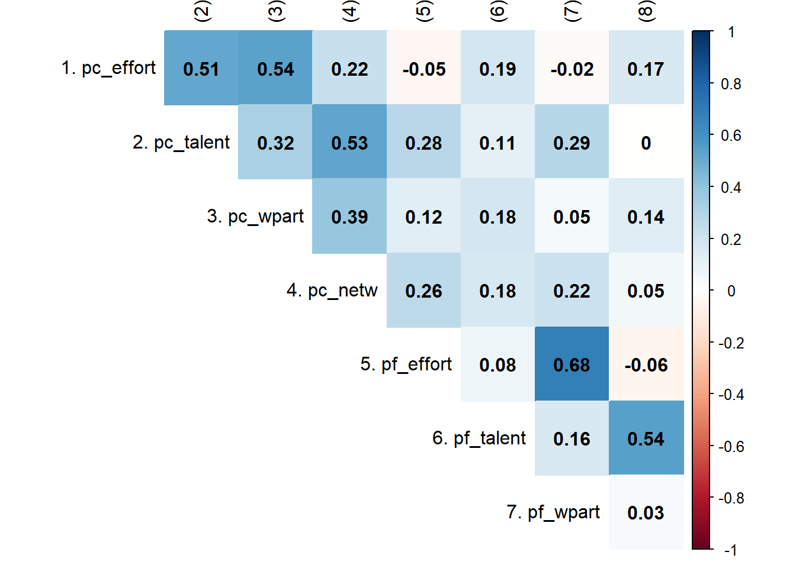
#summary(fit2_o,standardized=TRUE, fit.measures=TRUE)
fitmeasures(fit2_o)[c("chisq.scaled","df","cfi","cfi.scaled","cfi.robust","rmsea","rmsea.scaled","rmsea.robust")]
semPlot::semPaths(object = fit2_o,what = "std",thresholds = FALSE, intercepts = FALSE,fade=FALSE, curve = 1.5)
## chisq.scaled df cfi cfi.scaled cfi.robust rmsea rmsea.scaled
## 100.06185323 14.00000000 0.92567916 0.91208862 0.92577394 0.09562704 0.09331232
## rmsea.robust
## 0.09530656
## chisq.scaled df cfi cfi.scaled cfi.robust rmsea rmsea.scaled
## 101.48249122 14.00000000 0.98421904 0.96229187 NA 0.07128592 0.09414603
## rmsea.robust
## NANOTA: bad fit, heywood en estimación DWLS
2.3 Version 03: Random order (N=697)
| Statistic | N | Mean | St. Dev. | Min | Pctl(25) | Pctl(75) | Max |
| meritv03_perc_effort | 697 | 3.329 | 1.370 | 1 | 2 | 5 | 5 |
| meritv03_perc_talent | 697 | 3.072 | 1.245 | 1 | 2 | 4 | 5 |
| meritv03_perc_wpart | 697 | 3.722 | 1.360 | 1 | 3 | 5 | 5 |
| meritv03_perc_netw | 697 | 3.900 | 1.235 | 1 | 3 | 5 | 5 |
| meritv03_pref_effort | 697 | 4.046 | 1.159 | 1 | 4 | 5 | 5 |
| meritv03_pref_talent | 697 | 3.339 | 1.229 | 1 | 2 | 4 | 5 |
| meritv03_pref_wpart | 697 | 2.770 | 1.189 | 1 | 2 | 4 | 5 |
| meritv03_pref_netw | 697 | 2.506 | 1.144 | 1 | 2 | 3 | 5 |
cor03<-polychoric(dat03)
corrplot(cor03$rho,method = "color", type = "upper", order = "hclust", tl.col = "black", tl.srt = 45,addCoef.col = "black",diag = FALSE)
model03 <- '
perc_merit=~meritv03_perc_effort+meritv03_perc_talent
perc_nmerit=~meritv03_perc_wpart+meritv03_perc_netw
pref_merit=~meritv03_pref_effort+meritv03_pref_talent
pref_nmerit=~meritv03_pref_wpart+meritv03_pref_netw'
fit3_c <- cfa(model = model03,data = dat03,estimator="MLR",std.lv=FALSE) # Continuo/ estimador ML Robust
fit3_o <- cfa(model = model03,data = dat03,ordered = c("meritv03_perc_effort","meritv03_perc_talent",
"meritv03_perc_wpart","meritv03_perc_netw",
"meritv03_pref_effort","meritv03_pref_talent",
"meritv03_pref_wpart","meritv03_pref_netw"),std.lv=FALSE)
#---------------------------------------------------#
#summary(fit3_c,standardized=TRUE, fit.measures=TRUE)
fitmeasures(fit3_c)[c("chisq.scaled","df","cfi","cfi.scaled","cfi.robust","rmsea","rmsea.scaled","rmsea.robust")]
semPlot::semPaths(object = fit3_c,what = "std",thresholds = FALSE, intercepts = FALSE,fade=FALSE, curve = 1.5)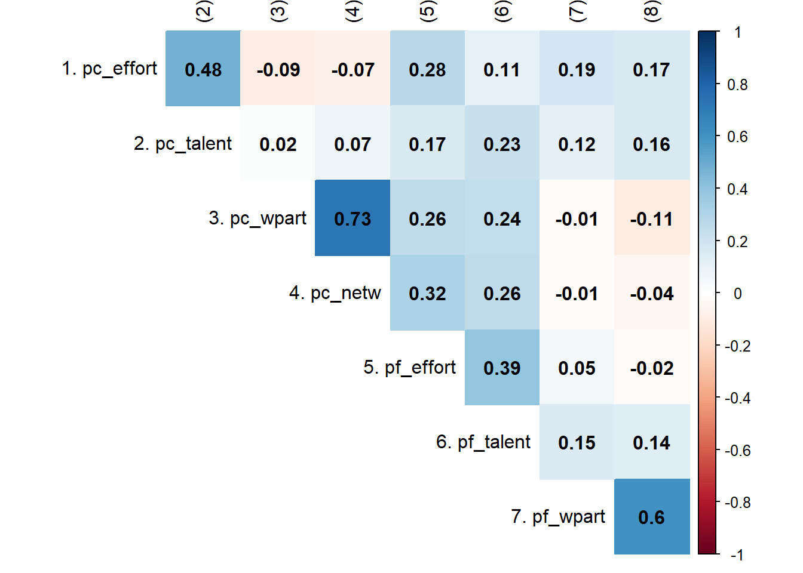
#summary(fit3_o,standardized=TRUE, fit.measures=TRUE)
fitmeasures(fit3_o)[c("chisq.scaled","df","cfi","cfi.scaled","cfi.robust","rmsea","rmsea.scaled","rmsea.robust")]
semPlot::semPaths(object = fit3_o,what = "std",thresholds = FALSE, intercepts = FALSE,fade=FALSE, curve = 1.5)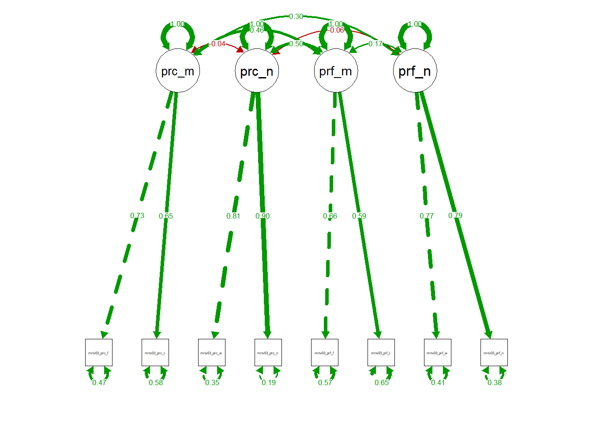
## chisq.scaled df cfi cfi.scaled cfi.robust rmsea rmsea.scaled
## 57.0584003 14.0000000 0.9519967 0.9424676 0.9523832 0.0686923 0.0664276
## rmsea.robust
## 0.0681436
## chisq.scaled df cfi cfi.scaled cfi.robust rmsea rmsea.scaled
## 60.02456981 14.00000000 0.99183602 0.98040527 NA 0.05074320 0.06872682
## rmsea.robust
## NANOTA: fit not very goood (RMSEA .7), no heywood. Try tau-equivalence
model03.tau <- '
perc_merit=~ r1*meritv03_perc_effort+r1*meritv03_perc_talent
perc_nmerit=~r2*meritv03_perc_wpart+ r2*meritv03_perc_netw
pref_merit=~ r3*meritv03_pref_effort+r3*meritv03_pref_talent
pref_nmerit=~r4*meritv03_pref_wpart+ r4*meritv03_pref_netw'
fit3_c.tau <- cfa(model = model03.tau,data = dat03,estimator="MLR",std.lv=FALSE) # Continuo/ estimador ML Robust
fit3_o.tau <- cfa(model = model03.tau,data = dat03,ordered = c("meritv03_perc_effort","meritv03_perc_talent",
"meritv03_perc_wpart","meritv03_perc_netw",
"meritv03_pref_effort","meritv03_pref_talent",
"meritv03_pref_wpart","meritv03_pref_netw"), std.lv=FALSE)
#---------------------------------------------------#
#summary(fit3_c.tau,standardized=TRUE, fit.measures=TRUE)
fitmeasures(fit3_c.tau)[c("chisq.scaled","df","cfi","cfi.scaled","cfi.robust","rmsea","rmsea.scaled","rmsea.robust")]
semPlot::semPaths(object = fit3_c.tau,what = "std",thresholds = FALSE, intercepts = FALSE,fade=FALSE, curve = 1.5)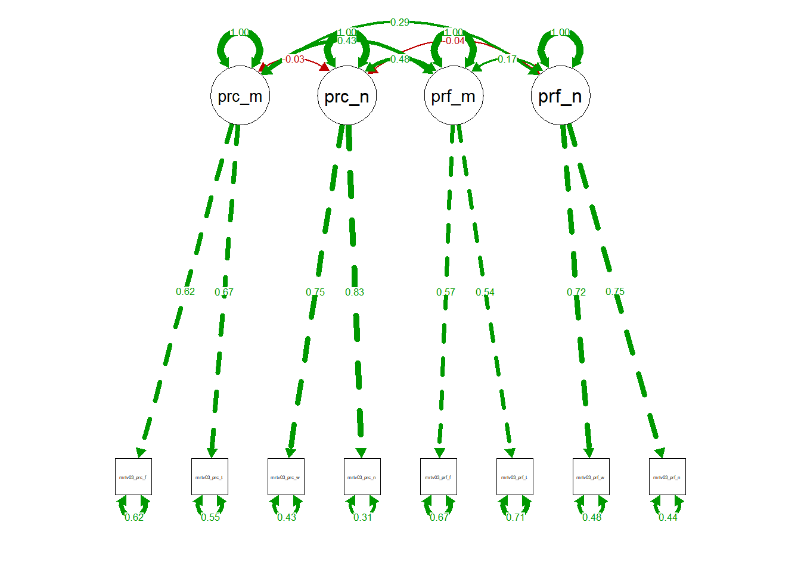
#summary(fit3_o,standardized=TRUE, fit.measures=TRUE)
fitmeasures(fit3_o.tau)[c("chisq.scaled","df","cfi","cfi.scaled","cfi.robust","rmsea","rmsea.scaled","rmsea.robust")]
semPlot::semPaths(object = fit3_o.tau,what = "std",thresholds = FALSE, intercepts = FALSE,fade=FALSE, curve = 1.5)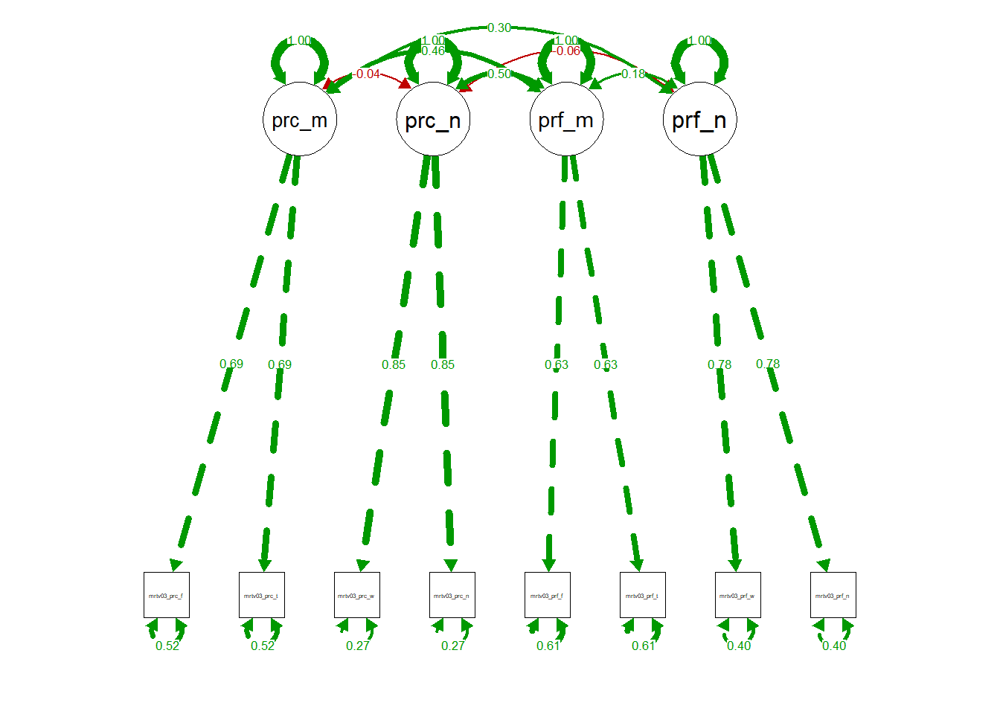
## chisq.scaled df cfi cfi.scaled cfi.robust rmsea rmsea.scaled
## 54.64691498 18.00000000 0.95176935 0.95103426 0.95471247 0.06072423 0.05404631
## rmsea.robust
## 0.05860871
## chisq.scaled df cfi cfi.scaled cfi.robust rmsea rmsea.scaled
## 59.09776813 18.00000000 0.99254921 0.98250283 NA 0.04275195 0.05727542
## rmsea.robust
## NArbind(fitmeasures(fit3_o)[c("chisq.scaled","df","cfi","cfi.scaled","cfi.robust","rmsea","rmsea.scaled","rmsea.robust")],
fitmeasures(fit3_o.tau)[c("chisq.scaled","df","cfi","cfi.scaled","cfi.robust","rmsea","rmsea.scaled","rmsea.robust")])
anova(fit3_o,fit3_o.tau)## chisq.scaled df cfi cfi.scaled cfi.robust rmsea rmsea.scaled rmsea.robust
## [1,] 60.02457 14 0.9918360 0.9804053 NA 0.05074320 0.06872682 NA
## [2,] 59.09777 18 0.9925492 0.9825028 NA 0.04275195 0.05727542 NA
## Scaled Chi-Squared Difference Test (method = "satorra.2000")
##
## lavaan NOTE:
## The "Chisq" column contains standard test statistics, not the
## robust test that should be reported per model. A robust difference
## test is a function of two standard (not robust) statistics.
##
## Df AIC BIC Chisq Chisq diff Df diff Pr(>Chisq)
## fit3_o 14 39.090
## fit3_o.tau 18 40.898 2.3387 4 0.6737NOTA: El modelo con igualdad de cargas factoriales no deteriora significativamente el ajuste del modelo.
2.4 Version 04: muestra completa (N=2236)
| Statistic | N | Mean | St. Dev. | Min | Pctl(25) | Pctl(75) | Max |
| perc_effort | 2,142 | 3.200 | 1.380 | 1.000 | 2.000 | 4.000 | 5.000 |
| perc_talent | 2,141 | 3.024 | 1.161 | 1.000 | 2.000 | 4.000 | 5.000 |
| perc_wpart | 2,141 | 3.660 | 1.361 | 1.000 | 3.000 | 5.000 | 5.000 |
| perc_netw | 2,141 | 3.787 | 1.242 | 1.000 | 3.000 | 5.000 | 5.000 |
| pref_effort | 2,141 | 3.894 | 1.254 | 1.000 | 3.000 | 5.000 | 5.000 |
| pref_talent | 2,141 | 3.243 | 1.188 | 1.000 | 2.000 | 4.000 | 5.000 |
| pref_wpart | 2,141 | 2.688 | 1.175 | 1.000 | 2.000 | 4.000 | 5.000 |
| pref_netw | 2,141 | 2.408 | 1.106 | 1.000 | 2.000 | 3.000 | 5.000 |
cor04<-polychoric(select(dat04,perc_effort,perc_talent,perc_wpart,perc_netw,pref_effort,pref_talent,pref_wpart,pref_netw))
corrplot(cor04$rho, method="color",type = "upper", order = "hclust", tl.col = "black", tl.srt = 45,addCoef.col = "black",diag = FALSE)
model04 <- '
perc_merit =~ perc_effort+perc_talent
perc_nmerit=~perc_wpart +perc_netw
pref_merit =~ pref_effort+pref_talent
pref_nmerit=~pref_wpart +pref_netw'
fit4_c <- cfa(model = model04,data = dat04,estimator="MLR",std.lv=FALSE) # Continuo/ estimador ML Robust
fit4_o <- cfa(model = model04,data = dat04,ordered = c("perc_effort","perc_talent",
"perc_wpart","perc_netw",
"pref_effort","pref_talent",
"pref_wpart","pref_netw"),std.lv=FALSE)
#---------------------------------------------------#
#summary(fit4_c,standardized=TRUE, fit.measures=TRUE)
fitmeasures(fit4_c)[c("chisq.scaled","df","cfi","cfi.scaled","cfi.robust","rmsea","rmsea.scaled","rmsea.robust")]
semPlot::semPaths(object = fit3_c,what = "std",thresholds = FALSE, intercepts = FALSE,fade=FALSE,curve = 2)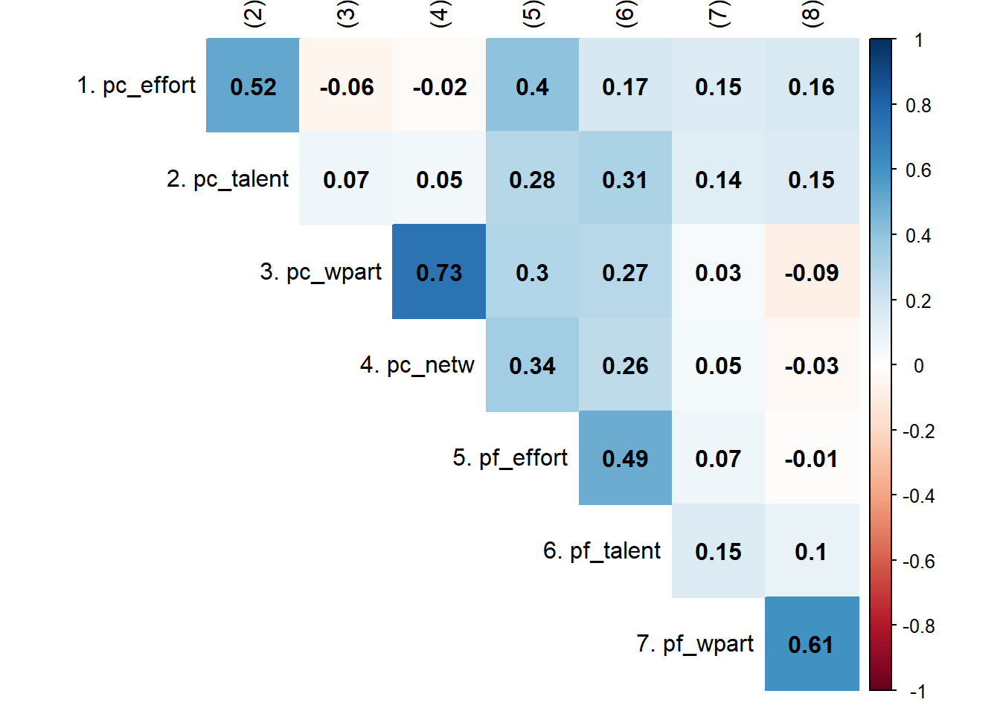
#summary(fit4_o,standardized=TRUE, fit.measures=TRUE)
fitmeasures(fit4_o)[c("chisq.scaled","df","cfi","cfi.scaled","cfi.robust","rmsea","rmsea.scaled","rmsea.robust")]
semPlot::semPaths(object = fit3_o,what = "std",thresholds = FALSE, intercepts = FALSE,fade=FALSE,curve = 2)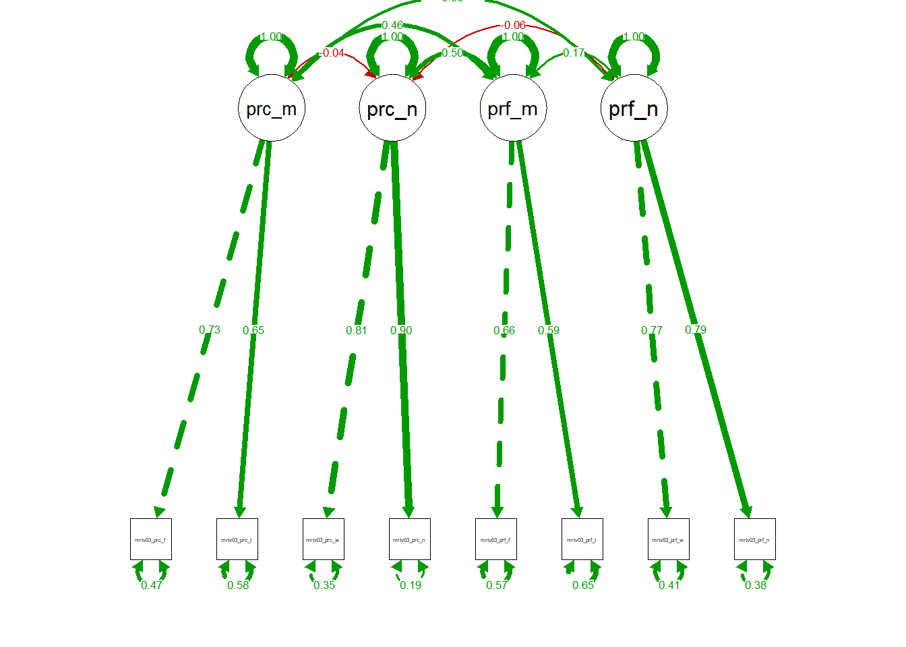
## chisq.scaled df cfi cfi.scaled cfi.robust rmsea rmsea.scaled
## 181.10487966 14.00000000 0.95270053 0.94250163 0.95276313 0.07634040 0.07466588
## rmsea.robust
## 0.07621226
## chisq.scaled df cfi cfi.scaled cfi.robust rmsea rmsea.scaled
## 200.77235322 14.00000000 0.99018169 0.97680332 NA 0.05987601 0.07895605
## rmsea.robust
## NA2.4.1 Resumen ajuste ola 01
sum_fit<- bind_rows(fitmeasures(fit1_c)[c("chisq.scaled","df","cfi","cfi.scaled","cfi.robust","rmsea","rmsea.scaled","rmsea.robust")],
fitmeasures(fit1_o)[c("chisq.scaled","df","cfi","cfi.scaled","cfi.robust","rmsea","rmsea.scaled","rmsea.robust")],
fitmeasures(fit2_c)[c("chisq.scaled","df","cfi","cfi.scaled","cfi.robust","rmsea","rmsea.scaled","rmsea.robust")],
fitmeasures(fit2_o)[c("chisq.scaled","df","cfi","cfi.scaled","cfi.robust","rmsea","rmsea.scaled","rmsea.robust")],
fitmeasures(fit3_c)[c("chisq.scaled","df","cfi","cfi.scaled","cfi.robust","rmsea","rmsea.scaled","rmsea.robust")],
fitmeasures(fit3_o)[c("chisq.scaled","df","cfi","cfi.scaled","cfi.robust","rmsea","rmsea.scaled","rmsea.robust")],
fitmeasures(fit4_c)[c("chisq.scaled","df","cfi","cfi.scaled","cfi.robust","rmsea","rmsea.scaled","rmsea.robust")],
fitmeasures(fit4_o)[c("chisq.scaled","df","cfi","cfi.scaled","cfi.robust","rmsea","rmsea.scaled","rmsea.robust")])
sum_fit$mod <- c("Modelo 1","Modelo 1","Modelo 2","Modelo 2","Modelo 3","Modelo 3","Modelo 4","Modelo 4")
sum_fit$est <- c("Continuo","Ordinal","Continuo","Ordinal","Continuo","Ordinal","Continuo","Ordinal")
sum_fit <- select(sum_fit,mod,est,everything())
kable(sum_fit,digits = 3,format = "html",row.names = F,booktabs=T, caption = "Resumen estadísticos de ajuste ola 1") %>% kable_styling(full_width = F) %>%
collapse_rows(columns = 1,valign = "middle") %>%
footnote(number = c("Modelo 1: fixed order by percepction/preference",
"Modelo 2: fixed order by topic (i.e: effort)",
"Modelo 3: Randomized order",
"Modelo 4: Complete sample"))| mod | est | chisq.scaled | df | cfi | cfi.scaled | cfi.robust | rmsea | rmsea.scaled | rmsea.robust |
|---|---|---|---|---|---|---|---|---|---|
| Modelo 1 | Continuo | 42.935 | 14 | 0.979 | 0.977 | 0.980 | 0.058 | 0.054 | 0.057 |
| Ordinal | 46.114 | 14 | 0.998 | 0.992 | 0.038 | 0.057 | |||
| Modelo 2 | Continuo | 100.062 | 14 | 0.926 | 0.912 | 0.926 | 0.096 | 0.093 | 0.095 |
| Ordinal | 101.482 | 14 | 0.984 | 0.962 | 0.071 | 0.094 | |||
| Modelo 3 | Continuo | 57.058 | 14 | 0.952 | 0.942 | 0.952 | 0.069 | 0.066 | 0.068 |
| Ordinal | 60.025 | 14 | 0.992 | 0.980 | 0.051 | 0.069 | |||
| Modelo 4 | Continuo | 181.105 | 14 | 0.953 | 0.943 | 0.953 | 0.076 | 0.075 | 0.076 |
| Ordinal | 200.772 | 14 | 0.990 | 0.977 | 0.060 | 0.079 | |||
| 1 Modelo 1: fixed order by percepction/preference | |||||||||
| 2 Modelo 2: fixed order by topic (i.e: effort) | |||||||||
| 3 Modelo 3: Randomized order | |||||||||
| 4 Modelo 4: Complete sample |
2.5 Análisis por Grupos múltiples
model04 <- '
perc_merit =~ perc_effort+perc_talent
perc_nmerit=~perc_wpart +perc_netw
pref_merit =~ pref_effort+pref_talent
pref_nmerit=~pref_wpart +pref_netw'
fit4_c_mg <- cfa(model = model04,data = dat04,estimator="MLR",std.lv=FALSE,group = "grupo") # Continuo/ estimador ML Robust
fit4_o_mg <- cfa(model = model04,data = dat04,ordered = c("perc_effort","perc_talent",
"perc_wpart","perc_netw",
"pref_effort","pref_talent",
"pref_wpart","pref_netw"),std.lv=FALSE, group = "grupo")
#---------------------------------------------------#
#summary(fit4_c_mg,standardized=TRUE, fit.measures=TRUE)
fitmeasures(fit4_c_mg)[c("cfi","cfi.scaled","cfi.robust","rmsea","rmsea.scaled","rmsea.robust")]
semPlot::semPaths(object = fit4_c_mg,what = "std",thresholds = FALSE, intercepts = FALSE, fade=FALSE, curve=2)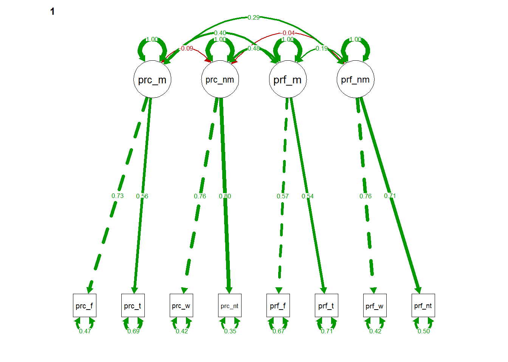

#summary(fit4_o_mg,standardized=TRUE, fit.measures=TRUE)
fitmeasures(fit4_o_mg)[c("cfi","cfi.scaled","cfi.robust","rmsea","rmsea.scaled","rmsea.robust")]
semPlot::semPaths(object = fit4_o_mg,what = "std",thresholds = FALSE, intercepts = FALSE,fade=FALSE, curve=2)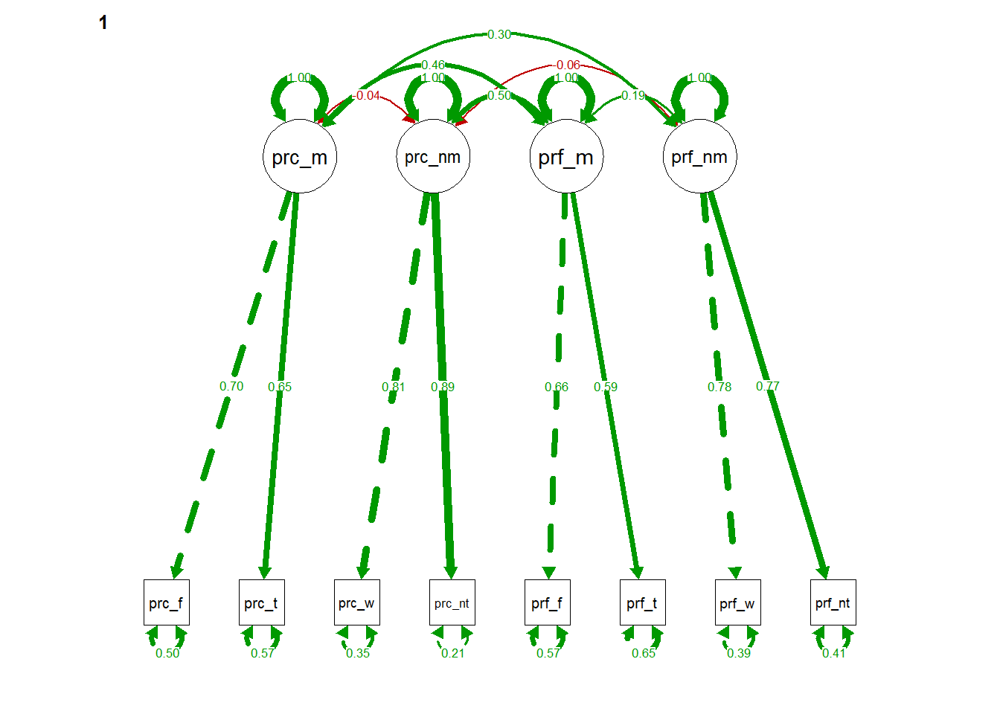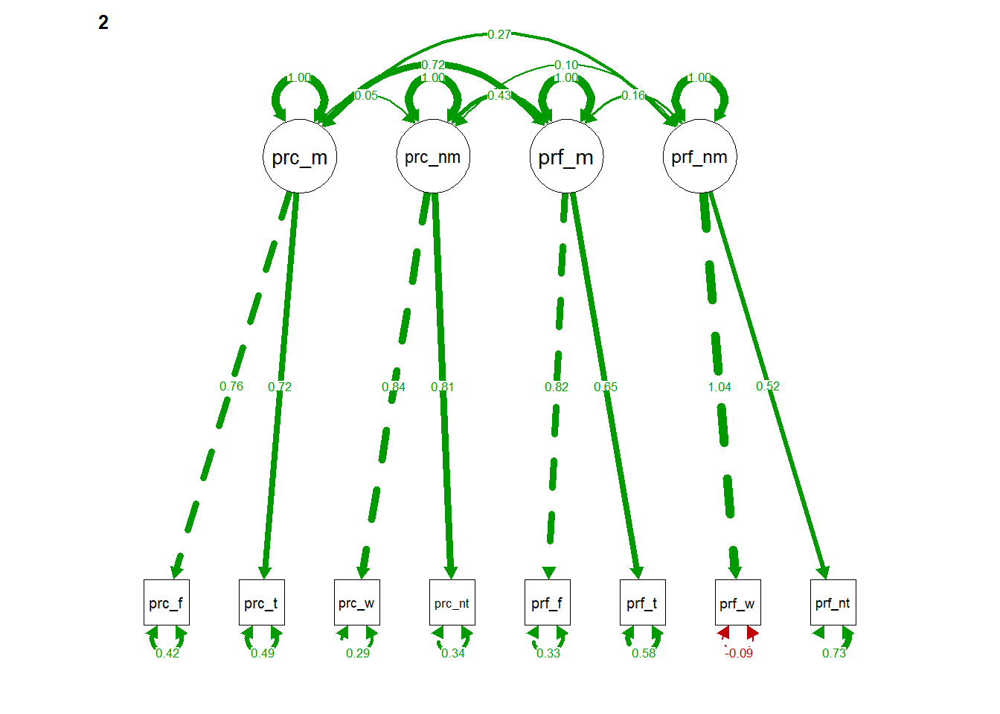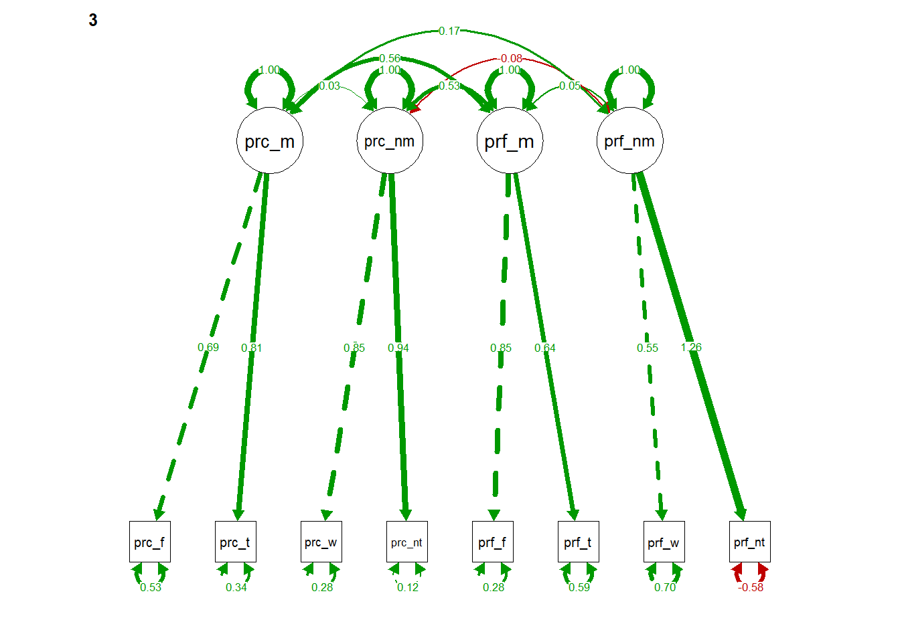
## cfi cfi.scaled cfi.robust rmsea rmsea.scaled rmsea.robust
## 0.95494030 0.94697921 0.95532301 0.07575741 0.07314653 0.07522301
## cfi cfi.scaled cfi.robust rmsea rmsea.scaled rmsea.robust
## 0.99236975 0.98072106 NA 0.05571542 0.07542086 NACosas por probar:
- V01+V02: cargas y fit
- V01+V03: cargas y fit
- V02+V03: cargas y fit
3 Modelo Factorial de Segundo Orden:
3.1 a. Factor de segundo orden por Percepción y Preferencia
model04b1or <- '
perc_merit=~ perc_effort+perc_talent
perc_nmerit=~perc_wpart +perc_netw
pref_merit=~ pref_effort+pref_talent
pref_nmerit=~pref_wpart +pref_netw
percep=~ perc_merit + perc_nmerit
prefer=~ pref_merit + pref_nmerit'
fit4a_c <- cfa(model = model04b1or,data = dat04, estimator="MLR")
fit4b_c <- cfa(model = model04b1or,data = dat04,ordered = c("perc_effort","perc_talent","perc_wpart","perc_netw",
"pref_effort","pref_talent","pref_wpart","pref_netw"))
#---------------------------------------------------#
#summary(fit4a_c,standardized=TRUE, fit.measures=TRUE)
fitmeasures(fit4a_c)[c("cfi","cfi.scaled","cfi.robust","rmsea","rmsea.scaled","rmsea.robust")]
semPlot::semPaths(object = fit4a_c,what = "std",thresholds = FALSE, intercepts = FALSE, fade=FALSE,curve=2)
#summary(fit4b_c,standardized=TRUE, fit.measures=TRUE)
fitmeasures(fit4b_c)[c("cfi","cfi.scaled","cfi.robust","rmsea","rmsea.scaled","rmsea.robust")]
semPlot::semPaths(object = fit4b_c,what = "std",thresholds = FALSE, intercepts = FALSE, fade=FALSE,curve=2)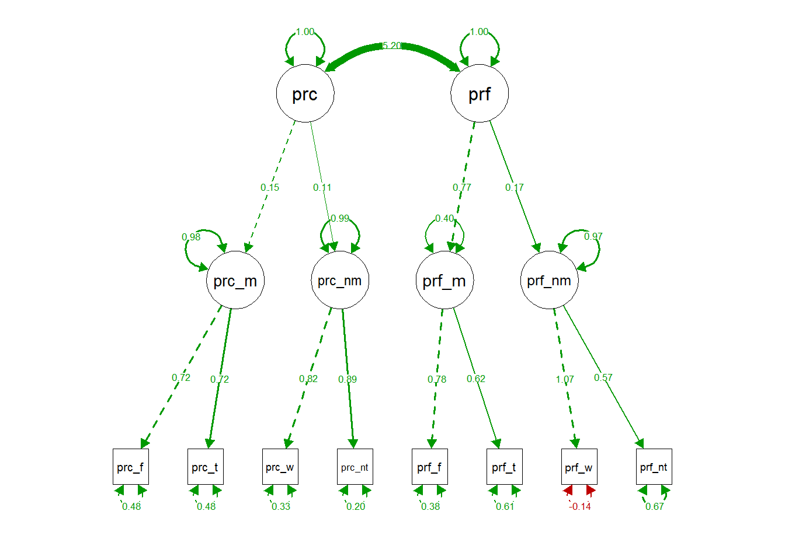
## cfi cfi.scaled cfi.robust rmsea rmsea.scaled rmsea.robust
## 0.94736842 0.93880041 0.94760970 0.07779789 0.07441956 0.07754042
## cfi cfi.scaled cfi.robust rmsea rmsea.scaled rmsea.robust
## 0.98259229 0.97082290 NA 0.07702357 0.08554841 NANOTA: Cargas factoriales de segundo orden son bajas. El ajuste del modelo no es bueno.
3.2 b. Factor de segundo orden por Meritocracia y No Meritocracia
model04b2or <-'perc_merit=~ perc_effort+perc_talent
perc_nmerit=~perc_wpart +perc_netw
pref_merit=~ pref_effort+pref_talent
pref_nmerit=~pref_wpart +pref_netw
merit =~ perc_merit + pref_merit
nmerit=~ perc_nmerit + pref_nmerit'
# fit4b_c <- cfa(model = model04b2or,data = dat04,estimator="MLR") # No converge
fit4b_o <- cfa(model = model04b2or,data = dat04,
ordered = c("perc_effort","perc_talent","perc_wpart","perc_netw",
"pref_effort","pref_talent","pref_wpart","pref_netw"))
#---------------------------------------------------#
# #summary(fit4b_c,standardized=TRUE, fit.measures=TRUE)
# fitmeasures(fit4b_c)[c("cfi","cfi.scaled","cfi.robust","rmsea","rmsea.scaled","rmsea.robust")]
# semPlot::semPaths(object = fit4b_c,what = "std",thresholds = FALSE, intercepts = FALSE, fade=FALSE, curve=2)
#summary(fit4b_o,standardized=TRUE, fit.measures=TRUE)
fitmeasures(fit4b_o)[c("cfi","cfi.scaled","cfi.robust","rmsea","rmsea.scaled","rmsea.robust")]
semPlot::semPaths(object = fit4b_o,what = "std",thresholds = FALSE, intercepts = FALSE, fade=FALSE, curve=2)
## cfi cfi.scaled cfi.robust rmsea rmsea.scaled rmsea.robust
## 0.97583700 0.95699375 NA 0.09074615 0.10386199 NANOTA: El modelo estimado con MLR con factores de segundo orden “meritocracia/ no meritocracia” no converge. EL modelo estimado a través de DWLS converge, posee cargas muy bajas y una muy alta (merit~pref_merit). Fit es malo (RMSEA >.10)
4 Wave 02
data02 <- sjlabelled::read_spss(path = "input/data/original/Estudio_3_ola2.sav",verbose = FALSE)
load(file = "input/data/proc/datawide.RData")
dat01 <- data02 %>% select(starts_with("meritv03_p")) 4.1 ATE indicadores meritocracia
m01<- lm(perc_effort_w2~treat,data = wide01)
m02<- lm(perc_talent_w2~treat,data = wide01)
m03<- lm(perc_wpart_w2~treat, data = wide01)
m04<- lm(perc_netw_w2~treat, data = wide01)
#--------------------------------------------#
m05<- lm(pref_effort_w2~treat,data = wide01)
m06<- lm(pref_talent_w2~treat,data = wide01)
m07<- lm(pref_wpart_w2 ~treat, data = wide01)
m08<- lm(pref_netw_w2 ~treat, data = wide01)
#--------------------------------------------#
stargazer::stargazer(m01,m02,m03,m04,type = "html")| Dependent variable: | ||||
| perc_effort_w2 | perc_talent_w2 | perc_wpart_w2 | perc_netw_w2 | |
| (1) | (2) | (3) | (4) | |
| treatpobreza | 0.061 | -0.018 | -0.047 | -0.010 |
| (0.072) | (0.064) | (0.077) | (0.073) | |
| treatdesiguald | -0.078 | -0.092 | 0.057 | 0.020 |
| (0.072) | (0.063) | (0.077) | (0.072) | |
| Constant | 3.322*** | 3.164*** | 3.542*** | 3.547*** |
| (0.051) | (0.045) | (0.054) | (0.051) | |
| Observations | 1,777 | 1,777 | 1,777 | 1,777 |
| R2 | 0.002 | 0.001 | 0.001 | 0.0001 |
| Adjusted R2 | 0.001 | 0.0002 | -0.0001 | -0.001 |
| Residual Std. Error (df = 1774) | 1.239 | 1.094 | 1.326 | 1.249 |
| F Statistic (df = 2; 1774) | 1.844 | 1.175 | 0.907 | 0.084 |
| Note: | p<0.1; p<0.05; p<0.01 | |||
stargazer::stargazer(m05,m06,m07,m08,type = "html")| Dependent variable: | ||||
| pref_effort_w2 | pref_talent_w2 | pref_wpart_w2 | pref_netw_w2 | |
| (1) | (2) | (3) | (4) | |
| treatpobreza | 0.085 | 0.064 | 0.059 | -0.094 |
| (0.067) | (0.066) | (0.067) | (0.062) | |
| treatdesiguald | 0.058 | 0.043 | -0.017 | -0.101 |
| (0.067) | (0.065) | (0.067) | (0.062) | |
| Constant | 3.879*** | 3.237*** | 2.592*** | 2.374*** |
| (0.047) | (0.046) | (0.047) | (0.044) | |
| Observations | 1,777 | 1,777 | 1,777 | 1,777 |
| R2 | 0.001 | 0.001 | 0.001 | 0.002 |
| Adjusted R2 | -0.0002 | -0.001 | -0.0003 | 0.001 |
| Residual Std. Error (df = 1774) | 1.155 | 1.128 | 1.154 | 1.065 |
| F Statistic (df = 2; 1774) | 0.841 | 0.503 | 0.709 | 1.660 |
| Note: | p<0.1; p<0.05; p<0.01 | |||
NOTA: Los tratamientos de información no se asocian de manera estadísticamente significativa con ninguno de los indicadores de la escala de meritocracia.
4.2 CFA Muestra completa (Control, Desigualdad y Pobreza)
| Statistic | N | Mean | St. Dev. | Min | Pctl(25) | Pctl(75) | Max |
| meritv03_perc_effort | 1,772 | 3.318 | 1.240 | 1.000 | 2.000 | 4.000 | 5.000 |
| meritv03_perc_talent | 1,772 | 3.125 | 1.095 | 1.000 | 2.000 | 4.000 | 5.000 |
| meritv03_perc_wpart | 1,772 | 3.547 | 1.325 | 1.000 | 3.000 | 5.000 | 5.000 |
| meritv03_perc_netw | 1,772 | 3.549 | 1.249 | 1.000 | 3.000 | 4.000 | 5.000 |
| meritv03_pref_effort | 1,772 | 3.924 | 1.157 | 1.000 | 3.000 | 5.000 | 5.000 |
| meritv03_pref_talent | 1,772 | 3.274 | 1.128 | 1.000 | 3.000 | 4.000 | 5.000 |
| meritv03_pref_wpart | 1,772 | 2.607 | 1.154 | 1.000 | 2.000 | 3.000 | 5.000 |
| meritv03_pref_netw | 1,772 | 2.308 | 1.065 | 1.000 | 1.000 | 3.000 | 5.000 |
dat01cor<- select(dat01,meritv03_perc_effort,meritv03_perc_talent,
meritv03_perc_wpart,meritv03_perc_netw,
meritv03_pref_effort,meritv03_pref_talent,
meritv03_pref_wpart,meritv03_pref_netw)
cor01<-polychoric(dat01cor)
corrplot(cor01$rho, type = "upper", tl.col = "black", tl.srt = 45,addCoef.col = "black",diag = FALSE)
model03 <- '
perc_merit=~meritv03_perc_effort+meritv03_perc_talent
perc_nmerit=~meritv03_perc_wpart+meritv03_perc_netw
pref_merit=~meritv03_pref_effort+meritv03_pref_talent
pref_nmerit=~meritv03_pref_wpart+meritv03_pref_netw'
fitw02_c <- cfa(model = model03,data = dat01,estimator="MLR",std.lv=FALSE) # Continuo/ estimador ML Robust
fitw02_o <- cfa(model = model03,data = dat01,ordered = c("meritv03_perc_effort","meritv03_perc_talent",
"meritv03_perc_wpart","meritv03_perc_netw",
"meritv03_pref_effort","meritv03_pref_talent",
"meritv03_pref_wpart","meritv03_pref_netw"))
#---------------------------------------------------#
#summary(fitw02_c,standardized=TRUE, fit.measures=TRUE)
fitmeasures(fitw02_c)[c("cfi","cfi.scaled","cfi.robust","rmsea","rmsea.scaled","rmsea.robust")]
semPlot::semPaths(object = fitw02_c,what = "std",thresholds = FALSE, intercepts = FALSE,fade=FALSE,curve=2)
#summary(fitw02_o,standardized=TRUE, fit.measures=TRUE)
fitmeasures(fitw02_o)[c("cfi","cfi.scaled","cfi.robust","rmsea","rmsea.scaled","rmsea.robust")]
semPlot::semPaths(object = fitw02_o,what = "std",thresholds = FALSE, intercepts = FALSE,fade=FALSE,curve=2)
## cfi cfi.scaled cfi.robust rmsea rmsea.scaled rmsea.robust
## 0.96683191 0.96480728 0.96795005 0.05064198 0.04589567 0.04967688
## cfi cfi.scaled cfi.robust rmsea rmsea.scaled rmsea.robust
## 0.98784345 0.97481090 NA 0.04672993 0.05956625 NANOTA: El ajuste de muestra completa en wave 02 con estimador MLR (robusto) es bastante bueno (CFI, RMSEA). El ajuste con DWLS es bastante bueno, CFI mejora, RMSEA aumenta un poco (0.59).
- Recomendación: es probable que el estimador MLR sea mejor que el ordinal.
4.2.1 Factor de segundo orden
modw2 <- '
perc_merit=~meritv03_perc_effort+meritv03_perc_talent
perc_nmerit=~meritv03_perc_wpart+meritv03_perc_netw
pref_merit=~meritv03_pref_effort+meritv03_pref_talent
pref_nmerit=~meritv03_pref_wpart+meritv03_pref_netw
merit =~perc_merit+pref_merit
nmerit=~perc_nmerit+pref_nmerit'
# mod2_merit_c <- cfa(model = modw2,data = dat01) # Continuo/ estimador ML Robust
mod2_merit_o <- cfa(model = modw2,data = dat01,ordered = c("meritv03_perc_effort","meritv03_perc_talent",
"meritv03_perc_wpart","meritv03_perc_netw",
"meritv03_pref_effort","meritv03_pref_talent",
"meritv03_pref_wpart","meritv03_pref_netw"))
#---------------------------------------------------#
# #summary(mod2_merit_c,standardized=TRUE, fit.measures=TRUE)
# fitmeasures(mod2_merit_c)[c("cfi","cfi.scaled","cfi.robust","rmsea","rmsea.scaled","rmsea.robust")]
# semPlot::semPaths(object = mod2_merit_c,what = "std",thresholds = FALSE, intercepts = FALSE)
#summary(mod2_merit_o,standardized=TRUE, fit.measures=TRUE)
fitmeasures(mod2_merit_o)[c("cfi","cfi.scaled","cfi.robust","rmsea","rmsea.scaled","rmsea.robust")]
semPlot::semPaths(object = mod2_merit_o,what = "std",thresholds = FALSE, intercepts = FALSE,fade=FALSE, curve=2, rotation=2)
## cfi cfi.scaled cfi.robust rmsea rmsea.scaled rmsea.robust
## 0.96479952 0.94371851 NA 0.07682146 0.08601914 NA
- Factor de segundo orden usando MLR no converge.
- Factor de segundo orden usando DWLS converge, pero las cargas no son buenas y el ajuste tampoco.
4.3 CFA Muestra Control
w02con <- data02 %>% filter(FL_6_DO_Control==1) %>% select(starts_with("meritv03_p")) | Statistic | N | Mean | St. Dev. | Min | Pctl(25) | Pctl(75) | Max |
| meritv03_perc_effort | 595 | 3.324 | 1.239 | 1.000 | 2.000 | 4.000 | 5.000 |
| meritv03_perc_talent | 595 | 3.165 | 1.087 | 1.000 | 2.000 | 4.000 | 5.000 |
| meritv03_perc_wpart | 595 | 3.536 | 1.296 | 1.000 | 3.000 | 5.000 | 5.000 |
| meritv03_perc_netw | 595 | 3.541 | 1.220 | 1.000 | 3.000 | 4.000 | 5.000 |
| meritv03_pref_effort | 595 | 3.877 | 1.166 | 1.000 | 3.000 | 5.000 | 5.000 |
| meritv03_pref_talent | 595 | 3.239 | 1.118 | 1.000 | 2.500 | 4.000 | 5.000 |
| meritv03_pref_wpart | 595 | 2.588 | 1.147 | 1.000 | 2.000 | 3.000 | 5.000 |
| meritv03_pref_netw | 595 | 2.370 | 1.074 | 1.000 | 2.000 | 3.000 | 5.000 |
corw02_1<-polychoric(w02con)
corrplot(corw02_1$rho, type = "upper", order = "hclust", tl.col = "black", tl.srt = 45,addCoef.col = "black",diag = FALSE)
model03 <- '
perc_merit=~meritv03_perc_effort+meritv03_perc_talent
perc_nmerit=~meritv03_perc_wpart+meritv03_perc_netw
pref_merit=~meritv03_pref_effort+meritv03_pref_talent
pref_nmerit=~meritv03_pref_wpart+meritv03_pref_netw'
fitw02a_c <- cfa(model = model03,data = w02con,estimator="MLR") # Continuo/ estimador ML Robust
fitw02a_o <- cfa(model = model03,data = w02con,ordered = c("meritv03_perc_effort","meritv03_perc_talent",
"meritv03_perc_wpart","meritv03_perc_netw",
"meritv03_pref_effort","meritv03_pref_talent",
"meritv03_pref_wpart","meritv03_pref_netw"))
#---------------------------------------------------#
#summary(fitw02a_c,standardized=TRUE, fit.measures=TRUE)
fitmeasures(fitw02a_c)[c("cfi","cfi.scaled","cfi.robust","rmsea","rmsea.scaled","rmsea.robust")]
semPlot::semPaths(object = fitw02a_c,what = "std",thresholds = FALSE, intercepts = FALSE, curve=2)
#summary(fitw02a_o,standardized=TRUE, fit.measures=TRUE)
fitmeasures(fitw02a_o)[c("cfi","cfi.scaled","cfi.robust","rmsea","rmsea.scaled","rmsea.robust")]
semPlot::semPaths(object = fitw02a_o,what = "std",thresholds = FALSE, intercepts = FALSE, curve=2)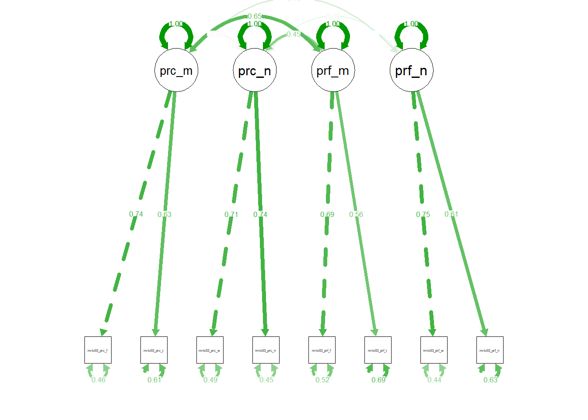
## cfi cfi.scaled cfi.robust rmsea rmsea.scaled rmsea.robust
## 0.95300796 0.95202309 0.95683934 0.05713915 0.04989786 0.05433717
## cfi cfi.scaled cfi.robust rmsea rmsea.scaled rmsea.robust
## 0.98848464 0.97507075 NA 0.04333340 0.05692432 NA4.4 CFA Muestra Pobreza
w02pob <- data02 %>% filter(FL_6_DO_Tratamiento==1) %>% select(starts_with("meritv03_p")) | Statistic | N | Mean | St. Dev. | Min | Pctl(25) | Pctl(75) | Max |
| meritv03_perc_effort | 586 | 3.387 | 1.260 | 1.000 | 2.000 | 4.000 | 5.000 |
| meritv03_perc_talent | 586 | 3.140 | 1.099 | 1.000 | 2.000 | 4.000 | 5.000 |
| meritv03_perc_wpart | 586 | 3.493 | 1.368 | 1.000 | 3.000 | 5.000 | 5.000 |
| meritv03_perc_netw | 586 | 3.534 | 1.274 | 1.000 | 3.000 | 4.000 | 5.000 |
| meritv03_pref_effort | 586 | 3.956 | 1.173 | 1.000 | 4.000 | 5.000 | 5.000 |
| meritv03_pref_talent | 586 | 3.304 | 1.135 | 1.000 | 3.000 | 4.000 | 5.000 |
| meritv03_pref_wpart | 586 | 2.654 | 1.142 | 1.000 | 2.000 | 3.000 | 5.000 |
| meritv03_pref_netw | 586 | 2.280 | 1.085 | 1.000 | 1.000 | 3.000 | 5.000 |
corw02_2<-polychoric(w02pob)
corrplot(corw02_2$rho, type = "upper", order = "hclust", tl.col = "black", tl.srt = 45,addCoef.col = "black",diag = FALSE)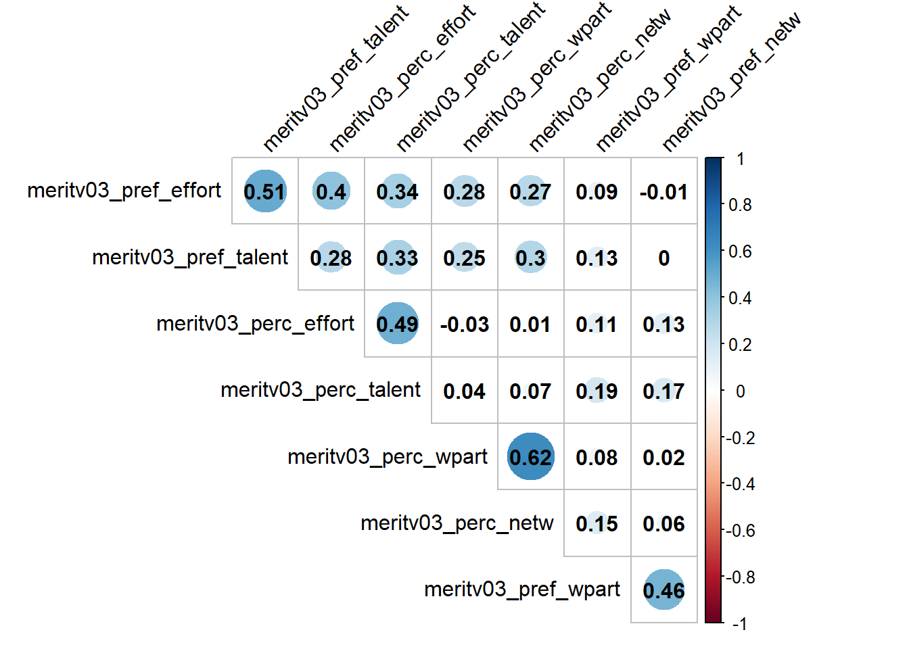
model03 <- '
perc_merit=~meritv03_perc_effort+meritv03_perc_talent
perc_nmerit=~meritv03_perc_wpart+meritv03_perc_netw
pref_merit=~meritv03_pref_effort+meritv03_pref_talent
pref_nmerit=~meritv03_pref_wpart+meritv03_pref_netw'
fitw02b_c <- cfa(model = model03,data = w02pob,estimator="MLR") # Continuo/ estimador ML Robust
fitw02b_o <- cfa(model = model03,data = w02pob,ordered = c("meritv03_perc_effort","meritv03_perc_talent",
"meritv03_perc_wpart","meritv03_perc_netw",
"meritv03_pref_effort","meritv03_pref_talent",
"meritv03_pref_wpart","meritv03_pref_netw"))
#---------------------------------------------------#
#summary(fitw02b_c,standardized=TRUE, fit.measures=TRUE)
fitmeasures(fitw02b_c)[c("chisq.scaled","df","cfi","cfi.scaled","cfi.robust","rmsea","rmsea.scaled","rmsea.robust")]
semPlot::semPaths(object = fitw02b_c,what = "std",thresholds = FALSE, intercepts = FALSE, curve=2)
#summary(fitw02b_o,standardized=TRUE, fit.measures=TRUE)
fitmeasures(fitw02b_o)[c("chisq.scaled","df","cfi","cfi.scaled","cfi.robust","rmsea","rmsea.scaled","rmsea.robust")]
semPlot::semPaths(object = fitw02b_o,what = "std",thresholds = FALSE, intercepts = FALSE, curve=2)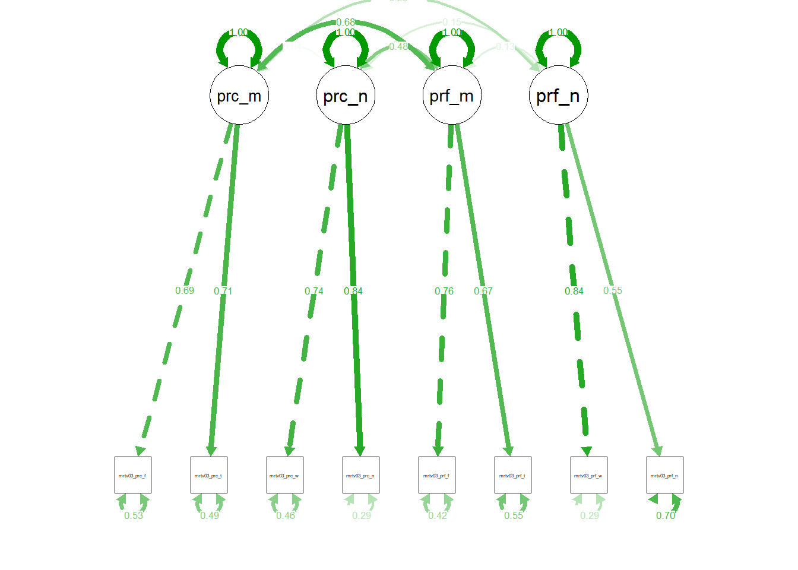
## chisq.scaled df cfi cfi.scaled cfi.robust rmsea rmsea.scaled
## 21.89512187 14.00000000 0.98686103 0.98728536 0.98891906 0.03601966 0.03102177
## rmsea.robust
## 0.03291156
## chisq.scaled df cfi cfi.scaled cfi.robust rmsea rmsea.scaled
## 32.82736205 14.00000000 0.99739823 0.98732355 NA 0.02531526 0.04794604
## rmsea.robust
## NA4.5 CFA Muestra Desigualdad
w02des <- data02 %>% filter(FL_6_DO_Tratamiento_desigualdad==1) %>% select(starts_with("meritv03_p")) | Statistic | N | Mean | St. Dev. | Min | Pctl(25) | Pctl(75) | Max |
| meritv03_perc_effort | 591 | 3.244 | 1.219 | 1.000 | 2.000 | 4.000 | 5.000 |
| meritv03_perc_talent | 591 | 3.069 | 1.099 | 1.000 | 2.000 | 4.000 | 5.000 |
| meritv03_perc_wpart | 591 | 3.611 | 1.311 | 1.000 | 3.000 | 5.000 | 5.000 |
| meritv03_perc_netw | 591 | 3.572 | 1.255 | 1.000 | 3.000 | 4.000 | 5.000 |
| meritv03_pref_effort | 591 | 3.939 | 1.130 | 1.000 | 3.000 | 5.000 | 5.000 |
| meritv03_pref_talent | 591 | 3.281 | 1.132 | 1.000 | 3.000 | 4.000 | 5.000 |
| meritv03_pref_wpart | 591 | 2.579 | 1.173 | 1.000 | 2.000 | 3.000 | 5.000 |
| meritv03_pref_netw | 591 | 2.272 | 1.034 | 1.000 | 1.000 | 3.000 | 5.000 |
corw02_3<-polychoric(w02des)
corrplot(corw02_3$rho, type = "upper", order = "hclust", tl.col = "black", tl.srt = 45,addCoef.col = "black",diag = FALSE)
model03 <- '
perc_merit=~meritv03_perc_effort+meritv03_perc_talent
perc_nmerit=~meritv03_perc_wpart+meritv03_perc_netw
pref_merit=~meritv03_pref_effort+meritv03_pref_talent
pref_nmerit=~meritv03_pref_wpart+meritv03_pref_netw'
fitw02c_c <- cfa(model = model03,data = w02des,estimator="MLR") # Continuo/ estimador ML Robust
fitw02c_o <- cfa(model = model03,data = w02des,ordered = c("meritv03_perc_effort","meritv03_perc_talent",
"meritv03_perc_wpart","meritv03_perc_netw",
"meritv03_pref_effort","meritv03_pref_talent",
"meritv03_pref_wpart","meritv03_pref_netw"))
#---------------------------------------------------#
#summary(fitw02c_c,standardized=TRUE, fit.measures=TRUE)
fitmeasures(fitw02c_c)[c("chisq.scaled","df","cfi","cfi.scaled","cfi.robust","rmsea","rmsea.scaled","rmsea.robust")]
semPlot::semPaths(object = fitw02c_c,what = "std",thresholds = FALSE, intercepts = FALSE)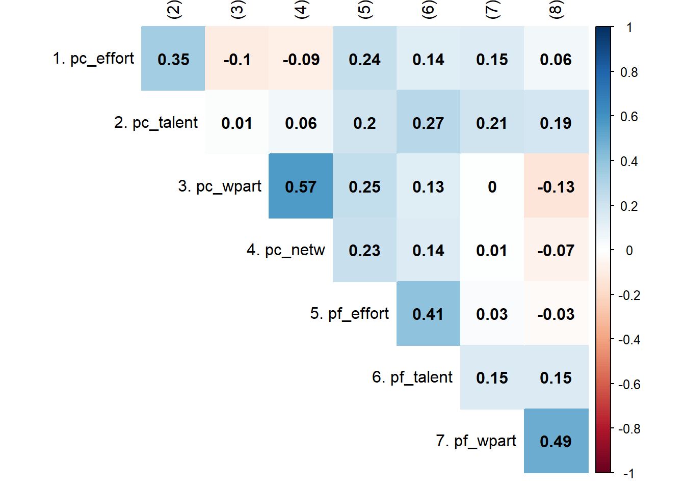
#summary(fitw02b_o,standardized=TRUE, fit.measures=TRUE)
fitmeasures(fitw02c_o)[c("chisq.scaled","df","cfi","cfi.scaled","cfi.robust","rmsea","rmsea.scaled","rmsea.robust")]
semPlot::semPaths(object = fitw02c_o,what = "std",thresholds = FALSE, intercepts = FALSE)
## chisq.scaled df cfi cfi.scaled cfi.robust rmsea rmsea.scaled
## 46.32268992 14.00000000 0.93940521 0.92687174 0.93936161 0.06371050 0.06250230
## rmsea.robust
## 0.06334778
## chisq.scaled df cfi cfi.scaled cfi.robust rmsea rmsea.scaled
## 69.67269301 14.00000000 0.97297449 0.94366656 NA 0.06420276 0.08209772
## rmsea.robust
## NA5 Resumen ajuste ola 2
sum_fitw02<- bind_rows(fitmeasures(fitw02_c)[ c("cfi","cfi.scaled","cfi.robust","rmsea","rmsea.scaled","rmsea.robust")],
fitmeasures(fitw02_o)[ c("cfi","cfi.scaled","cfi.robust","rmsea","rmsea.scaled","rmsea.robust")],
fitmeasures(fitw02a_c)[c("cfi","cfi.scaled","cfi.robust","rmsea","rmsea.scaled","rmsea.robust")],
fitmeasures(fitw02a_o)[c("cfi","cfi.scaled","cfi.robust","rmsea","rmsea.scaled","rmsea.robust")],
fitmeasures(fitw02b_c)[c("cfi","cfi.scaled","cfi.robust","rmsea","rmsea.scaled","rmsea.robust")],
fitmeasures(fitw02b_o)[c("cfi","cfi.scaled","cfi.robust","rmsea","rmsea.scaled","rmsea.robust")],
fitmeasures(fitw02c_c)[c("cfi","cfi.scaled","cfi.robust","rmsea","rmsea.scaled","rmsea.robust")],
fitmeasures(fitw02c_c)[c("cfi","cfi.scaled","cfi.robust","rmsea","rmsea.scaled","rmsea.robust")])
sum_fitw02$mod <- c("Modelo 1","Modelo 1","Modelo 2","Modelo 2","Modelo 3","Modelo 3","Modelo 4","Modelo 4")
sum_fitw02$est <- c("Continuo","Ordinal","Continuo","Ordinal","Continuo","Ordinal","Continuo","Ordinal")
sum_fitw02 <- select(sum_fitw02,mod,est,everything())
kable(sum_fitw02,digits = 3,format = "html",row.names = F,booktabs=T, caption = "Resumen ajuste ola 2") %>%
kable_styling(full_width = F) %>%
collapse_rows(columns = 1,valign = "middle") %>%
footnote(number = c("Modelo 1: Muestra completa",
"Modelo 2: Muestra grupo Control",
"Modelo 3: Muestra grupo tratamiento pobreza",
"Modelo 4: Muestra grupo tratamiento desigualdad"))| mod | est | cfi | cfi.scaled | cfi.robust | rmsea | rmsea.scaled | rmsea.robust |
|---|---|---|---|---|---|---|---|
| Modelo 1 | Continuo | 0.967 | 0.965 | 0.968 | 0.051 | 0.046 | 0.050 |
| Ordinal | 0.988 | 0.975 | 0.047 | 0.060 | |||
| Modelo 2 | Continuo | 0.953 | 0.952 | 0.957 | 0.057 | 0.050 | 0.054 |
| Ordinal | 0.988 | 0.975 | 0.043 | 0.057 | |||
| Modelo 3 | Continuo | 0.987 | 0.987 | 0.989 | 0.036 | 0.031 | 0.033 |
| Ordinal | 0.997 | 0.987 | 0.025 | 0.048 | |||
| Modelo 4 | Continuo | 0.939 | 0.927 | 0.939 | 0.064 | 0.063 | 0.063 |
| Ordinal | 0.939 | 0.927 | 0.939 | 0.064 | 0.063 | 0.063 | |
| 1 Modelo 1: Muestra completa | |||||||
| 2 Modelo 2: Muestra grupo Control | |||||||
| 3 Modelo 3: Muestra grupo tratamiento pobreza | |||||||
| 4 Modelo 4: Muestra grupo tratamiento desigualdad |
6 Wave 03
data03 <- sjlabelled::read_spss(path = "input/data/original/Estudio_3_ola3.sav",verbose = FALSE)
dat01 <- data03 %>% select(starts_with("meritv03_p")) sjt.fa(data = dat01,show.comm = TRUE)## Parallel analysis suggests that the number of factors = 3 and the number of components = NA| Factor 1 | Factor 2 | Factor 3 | Communality | |
|---|---|---|---|---|
|
Pensando en la sociedad chilena, ¿En qué medida se encuentra usted de acuerdo o en desacuerdo con cada una de las siguientes afirmaciones? - Quienes más se esfuerzan logran obtener mayores recompensas que quienes se esfuerzan menos. |
0.66 | -0.28 | 0.09 | 0.45 |
|
Pensando en la sociedad chilena, ¿En qué medida se encuentra usted de acuerdo o en desacuerdo con cada una de las siguientes afirmaciones? - Quienes poseen más talento logran obtener mayores recompensas que quienes poseen menos talento. |
0.58 | -0.09 | 0.13 | 0.36 |
|
Pensando en la sociedad chilena, ¿En qué medida se encuentra usted de acuerdo o en desacuerdo con cada una de las siguientes afirmaciones? - Quienes tienen padres ricos logran salir adelante. |
-0.05 | 0.73 | 0.08 | 0.52 |
|
Pensando en la sociedad chilena, ¿En qué medida se encuentra usted de acuerdo o en desacuerdo con cada una de las siguientes afirmaciones? - Quienes tienen buenos contactos logran salir adelante. |
-0.02 | 0.71 | 0.09 | 0.50 |
|
Pensando en la sociedad chilena, ¿En qué medida se encuentra usted de acuerdo o en desacuerdo con cada una de las siguientes afirmaciones? - Quienes más se esfuerzan deberÃan obtener mayores recompensas que quienes se esfuerzan menos. |
0.55 | 0.19 | -0.15 | 0.39 |
|
Pensando en la sociedad chilena, ¿En qué medida se encuentra usted de acuerdo o en desacuerdo con cada una de las siguientes afirmaciones? - Quienes poseen más talento deberÃan obtener mayores recompensas que quienes poseen menos talento. |
0.43 | 0.23 | -0.07 | 0.28 |
|
Pensando en la sociedad chilena, ¿En qué medida se encuentra usted de acuerdo o en desacuerdo con cada una de las siguientes afirmaciones? - Está bien que quienes tienen padres ricos salgan adelante. |
0.03 | 0.13 | 0.75 | 0.58 |
|
Pensando en la sociedad chilena, ¿En qué medida se encuentra usted de acuerdo o en desacuerdo con cada una de las siguientes afirmaciones? - Está bien que quienes tienen buenos contactos salgan adelante. |
0.02 | 0.06 | 0.69 | 0.49 |
| Total Communalities | 3.58 | |||
| Cronbach’s α | 0.62 | 0.68 | 0.69 | |
model03 <- '
perc_merit=~meritv03_perc_effort+meritv03_perc_talent
perc_nmerit=~meritv03_perc_wpart+meritv03_perc_netw
pref_merit=~meritv03_pref_effort+meritv03_pref_talent
pref_nmerit=~meritv03_pref_wpart+meritv03_pref_netw'
fitw03c_c <- cfa(model = model03,data = dat01,estimator="MLR") # Continuo/ estimador ML Robust
fitw03c_o <- cfa(model = model03,data = dat01,ordered = c("meritv03_perc_effort","meritv03_perc_talent",
"meritv03_perc_wpart","meritv03_perc_netw",
"meritv03_pref_effort","meritv03_pref_talent",
"meritv03_pref_wpart","meritv03_pref_netw"))
#---------------------------------------------------#
#summary(fitw03c_c,standardized=TRUE, fit.measures=TRUE)
fitmeasures(fitw03c_c)[c("chisq.scaled","df","cfi","cfi.scaled","cfi.robust","rmsea","rmsea.scaled","rmsea.robust")]
#summary(fitw03c_o,standardized=TRUE, fit.measures=TRUE)
fitmeasures(fitw03c_o)[c("chisq.scaled","df","cfi","cfi.scaled","cfi.robust","rmsea","rmsea.scaled","rmsea.robust")]## chisq.scaled df cfi cfi.scaled cfi.robust rmsea rmsea.scaled
## 62.42098851 14.00000000 0.97001271 0.96743840 0.97104967 0.05354429 0.04868836
## rmsea.robust
## 0.05249427
## chisq.scaled df cfi cfi.scaled cfi.robust rmsea rmsea.scaled
## 106.11132208 14.00000000 0.98842335 0.97425449 NA 0.05216642 0.06717594
## rmsea.robust
## NAsummary > * Ajuste usando estimador MLR es bueno (CFI = 0.971, RMSEA = 0.052). El chi2 (robusto) es 62.421
> * Ajuste usando estimador DWLS es bueno (CFI = 0.974, RMSEA = 0.067). El chi2 (robusto) es 106.111
7 Resumen ajuste ola 3
sum_fitw03<- bind_rows(fitmeasures(fitw03c_c)[ c("cfi","cfi.scaled","cfi.robust","rmsea","rmsea.scaled","rmsea.robust")],
fitmeasures(fitw03c_o)[ c("cfi","cfi.scaled","cfi.robust","rmsea","rmsea.scaled","rmsea.robust")])
sum_fitw03$mod <- c("Modelo 1","Modelo 1")
sum_fitw03$est <- c("Continuo","Ordinal")
sum_fitw03 <- select(sum_fitw03,mod,est,everything())
kable(sum_fitw03,digits = 3,format = "html",row.names = F,booktabs=T,caption = "Resumen ajuste ola 3") %>%
kable_styling(full_width = F) %>%
collapse_rows(columns = 1,valign = "middle") %>%
footnote(number = c("Modelo 1: Muestra completa"))| mod | est | cfi | cfi.scaled | cfi.robust | rmsea | rmsea.scaled | rmsea.robust |
|---|---|---|---|---|---|---|---|
| Modelo 1 | Continuo | 0.970 | 0.967 | 0.971 | 0.054 | 0.049 | 0.052 |
| Ordinal | 0.988 | 0.974 | 0.052 | 0.067 | |||
| 1 Modelo 1: Muestra completa |
8 Análisis longitudinal
library(sjPlot)
library(dplyr)
library(lavaan)
library(stargazer)
library(corrplot)
library(psych)
library(knitr)
library(kableExtra)
load(file = "input/data/proc/datawide_123.RData")8.1 Correlación indicadores w01 y w02
g01<- wide02 %>% filter(grupo==1) %>% select(starts_with("perc_"),starts_with("pref_")) # Fixed by perception/preference
g02<- wide02 %>% filter(grupo==2) %>% select(starts_with("perc_"),starts_with("pref_")) # Fixed by topic (i.e: effort)
g03<- wide02 %>% filter(grupo==3) %>% select(starts_with("perc_"),starts_with("pref_")) # Randomized8.1.1 Grupo Versión 01
stargazer(g01,type = "html", median = T,digits = 2)| Statistic | N | Mean | St. Dev. | Min | Pctl(25) | Median | Pctl(75) | Max |
| perc_effort_w1 | 486 | 3.22 | 1.35 | 1 | 2 | 3 | 4 | 5 |
| perc_talent_w1 | 486 | 3.02 | 1.11 | 1 | 2 | 3 | 4 | 5 |
| perc_wpart_w1 | 486 | 3.61 | 1.36 | 1 | 3 | 4 | 5 | 5 |
| perc_netw_w1 | 486 | 3.76 | 1.23 | 1 | 3 | 4 | 5 | 5 |
| perc_effort_w2 | 486 | 3.33 | 1.23 | 1 | 2 | 3.5 | 4 | 5 |
| perc_talent_w2 | 486 | 3.13 | 1.09 | 1 | 2 | 3 | 4 | 5 |
| perc_wpart_w2 | 486 | 3.59 | 1.30 | 1 | 3 | 4 | 5 | 5 |
| perc_netw_w2 | 486 | 3.56 | 1.26 | 1 | 3 | 4 | 4 | 5 |
| perc_effort_w3 | 486 | 3.47 | 1.16 | 1 | 3 | 4 | 4 | 5 |
| perc_talent_w3 | 486 | 3.18 | 1.01 | 1 | 3 | 3 | 4 | 5 |
| perc_wpart_w3 | 486 | 3.38 | 1.30 | 1 | 3 | 4 | 4 | 5 |
| perc_netw_w3 | 486 | 3.52 | 1.20 | 1 | 3 | 4 | 4 | 5 |
| pref_effort_w1 | 486 | 3.91 | 1.24 | 1 | 3 | 4 | 5 | 5 |
| pref_talent_w1 | 486 | 3.33 | 1.15 | 1 | 3 | 3 | 4 | 5 |
| pref_wpart_w1 | 486 | 2.54 | 1.12 | 1 | 2 | 3 | 3 | 5 |
| pref_netw_w1 | 486 | 2.30 | 1.06 | 1 | 1 | 2 | 3 | 5 |
| pref_effort_w2 | 486 | 3.92 | 1.13 | 1 | 3 | 4 | 5 | 5 |
| pref_talent_w2 | 486 | 3.30 | 1.10 | 1 | 3 | 3 | 4 | 5 |
| pref_wpart_w2 | 486 | 2.60 | 1.14 | 1 | 2 | 3 | 3 | 5 |
| pref_netw_w2 | 486 | 2.29 | 1.09 | 1 | 1 | 2 | 3 | 5 |
| pref_effort_w3 | 486 | 4.03 | 1.11 | 1 | 4 | 4 | 5 | 5 |
| pref_talent_w3 | 486 | 3.49 | 1.01 | 1 | 3 | 4 | 4 | 5 |
| pref_wpart_w3 | 486 | 2.51 | 1.16 | 1 | 2 | 3 | 3 | 5 |
| pref_netw_w3 | 486 | 2.35 | 1.08 | 1 | 2 | 2 | 3 | 5 |
corwide01a<- polychoric(x = select(g01 ,starts_with(match = "perc_")),na.rm = T)
corrplot(corwide01a$rho, method = "color" ,type = "upper", tl.col = "black", tl.srt = 45,addCoef.col = "black",diag = FALSE)Percepción
corwide01b<- polychoric(x = select(g01 ,starts_with(match = "pref_")),na.rm = T)
corrplot(corwide01b$rho, method = "color" ,type = "upper", tl.col = "black", tl.srt = 45,addCoef.col = "black",diag = FALSE)
Preferencia
8.1.2 Grupo Versión 02
stargazer(g02,type = "html", median = T,digits = 2)| Statistic | N | Mean | St. Dev. | Min | Pctl(25) | Median | Pctl(75) | Max |
| perc_effort_w1 | 471 | 3.10 | 1.42 | 1 | 2 | 3 | 4 | 5 |
| perc_talent_w1 | 471 | 3.09 | 1.13 | 1 | 2 | 3 | 4 | 5 |
| perc_wpart_w1 | 471 | 3.65 | 1.36 | 1 | 3 | 4 | 5 | 5 |
| perc_netw_w1 | 471 | 3.68 | 1.22 | 1 | 3 | 4 | 5 | 5 |
| perc_effort_w2 | 471 | 3.35 | 1.25 | 1 | 2 | 4 | 4 | 5 |
| perc_talent_w2 | 471 | 3.14 | 1.10 | 1 | 2 | 3 | 4 | 5 |
| perc_wpart_w2 | 471 | 3.59 | 1.26 | 1 | 3 | 4 | 5 | 5 |
| perc_netw_w2 | 471 | 3.61 | 1.20 | 1 | 3 | 4 | 4 | 5 |
| perc_effort_w3 | 471 | 3.54 | 1.22 | 1 | 3 | 4 | 5 | 5 |
| perc_talent_w3 | 471 | 3.21 | 1.06 | 1 | 2.5 | 3 | 4 | 5 |
| perc_wpart_w3 | 471 | 3.41 | 1.27 | 1 | 3 | 4 | 4 | 5 |
| perc_netw_w3 | 471 | 3.43 | 1.28 | 1 | 3 | 4 | 4 | 5 |
| pref_effort_w1 | 471 | 3.75 | 1.34 | 1 | 3 | 4 | 5 | 5 |
| pref_talent_w1 | 471 | 3.18 | 1.15 | 1 | 2 | 3 | 4 | 5 |
| pref_wpart_w1 | 471 | 2.77 | 1.20 | 1 | 2 | 3 | 4 | 5 |
| pref_netw_w1 | 471 | 2.39 | 1.09 | 1 | 2 | 2 | 3 | 5 |
| pref_effort_w2 | 471 | 4.00 | 1.14 | 1 | 4 | 4 | 5 | 5 |
| pref_talent_w2 | 471 | 3.27 | 1.15 | 1 | 2.5 | 3 | 4 | 5 |
| pref_wpart_w2 | 471 | 2.59 | 1.15 | 1 | 2 | 3 | 3 | 5 |
| pref_netw_w2 | 471 | 2.30 | 1.03 | 1 | 2 | 2 | 3 | 5 |
| pref_effort_w3 | 471 | 4.11 | 1.08 | 1 | 4 | 4 | 5 | 5 |
| pref_talent_w3 | 471 | 3.45 | 1.12 | 1 | 3 | 4 | 4 | 5 |
| pref_wpart_w3 | 471 | 2.53 | 1.14 | 1 | 2 | 3 | 3 | 5 |
| pref_netw_w3 | 471 | 2.28 | 1.05 | 1 | 1 | 2 | 3 | 5 |
corwide02a<- polychoric(x = select(g02 ,starts_with(match = "perc_")),na.rm = T)
corrplot(corwide02a$rho, method = "color" ,type = "upper", tl.col = "black", tl.srt = 45,addCoef.col = "black",diag = FALSE)Percepción
corwide02b<- polychoric(x = select(g02 ,starts_with(match = "pref_")),na.rm = T)
corrplot(corwide02b$rho, method = "color" ,type = "upper", tl.col = "black", tl.srt = 45,addCoef.col = "black",diag = FALSE)
Preferencia
8.1.3 Grupo Versión 03
stargazer(g03,type = "html", median = T,digits = 2)| Statistic | N | Mean | St. Dev. | Min | Pctl(25) | Median | Pctl(75) | Max |
| perc_effort_w1 | 491 | 3.41 | 1.34 | 1 | 2 | 4 | 5 | 5 |
| perc_talent_w1 | 491 | 3.12 | 1.24 | 1 | 2 | 3 | 4 | 5 |
| perc_wpart_w1 | 491 | 3.76 | 1.34 | 1 | 3 | 4 | 5 | 5 |
| perc_netw_w1 | 491 | 3.92 | 1.22 | 1 | 3 | 4 | 5 | 5 |
| perc_effort_w2 | 491 | 3.32 | 1.24 | 1 | 2 | 4 | 4 | 5 |
| perc_talent_w2 | 491 | 3.13 | 1.09 | 1 | 2 | 3 | 4 | 5 |
| perc_wpart_w2 | 491 | 3.44 | 1.41 | 1 | 2 | 4 | 5 | 5 |
| perc_netw_w2 | 491 | 3.50 | 1.28 | 1 | 3 | 4 | 4 | 5 |
| perc_effort_w3 | 491 | 3.49 | 1.23 | 1 | 3 | 4 | 4.5 | 5 |
| perc_talent_w3 | 491 | 3.21 | 1.01 | 1 | 3 | 3 | 4 | 5 |
| perc_wpart_w3 | 491 | 3.41 | 1.31 | 1 | 3 | 4 | 4 | 5 |
| perc_netw_w3 | 491 | 3.40 | 1.25 | 1 | 3 | 4 | 4 | 5 |
| pref_effort_w1 | 491 | 4.14 | 1.11 | 1 | 4 | 4 | 5 | 5 |
| pref_talent_w1 | 491 | 3.41 | 1.24 | 1 | 3 | 4 | 4 | 5 |
| pref_wpart_w1 | 491 | 2.79 | 1.19 | 1 | 2 | 3 | 4 | 5 |
| pref_netw_w1 | 491 | 2.48 | 1.15 | 1 | 2 | 2 | 3 | 5 |
| pref_effort_w2 | 491 | 3.88 | 1.20 | 1 | 3 | 4 | 5 | 5 |
| pref_talent_w2 | 491 | 3.30 | 1.10 | 1 | 3 | 3 | 4 | 5 |
| pref_wpart_w2 | 491 | 2.58 | 1.16 | 1 | 2 | 3 | 3 | 5 |
| pref_netw_w2 | 491 | 2.32 | 1.04 | 1 | 2 | 2 | 3 | 5 |
| pref_effort_w3 | 491 | 4.05 | 1.08 | 1 | 4 | 4 | 5 | 5 |
| pref_talent_w3 | 491 | 3.45 | 1.09 | 1 | 3 | 3 | 4 | 5 |
| pref_wpart_w3 | 491 | 2.53 | 1.14 | 1 | 2 | 3 | 3 | 5 |
| pref_netw_w3 | 491 | 2.34 | 1.07 | 1 | 1 | 2 | 3 | 5 |
corwide03a<- polychoric(x = select(g03 ,starts_with(match = "perc_")),na.rm = T)
corrplot(corwide03a$rho, type = "upper", tl.col = "black", tl.srt = 45,addCoef.col = "black",diag = FALSE,tl.cex = 0.75)
Percepción
corwide03b<- polychoric(x = select(g03 ,starts_with(match = "pref_")),na.rm = T)
corrplot(corwide03b$rho, method = "color" ,type = "upper", tl.col = "black", tl.srt = 45,addCoef.col = "black",diag = FALSE)
Preferencia
8.1.4 Muestra completa
stargazer(select(wide02 ,starts_with(match = "perc_"), starts_with("pref_")),type = "html", median = T,digits = 2)| Statistic | N | Mean | St. Dev. | Min | Pctl(25) | Median | Pctl(75) | Max |
| perc_effort_w1 | 1,448 | 3.24 | 1.38 | 1 | 2 | 3 | 4 | 5 |
| perc_talent_w1 | 1,448 | 3.08 | 1.16 | 1 | 2 | 3 | 4 | 5 |
| perc_wpart_w1 | 1,448 | 3.67 | 1.35 | 1 | 3 | 4 | 5 | 5 |
| perc_netw_w1 | 1,448 | 3.79 | 1.23 | 1 | 3 | 4 | 5 | 5 |
| perc_effort_w2 | 1,448 | 3.33 | 1.24 | 1 | 2 | 4 | 4 | 5 |
| perc_talent_w2 | 1,448 | 3.13 | 1.09 | 1 | 2 | 3 | 4 | 5 |
| perc_wpart_w2 | 1,448 | 3.54 | 1.33 | 1 | 3 | 4 | 5 | 5 |
| perc_netw_w2 | 1,448 | 3.55 | 1.25 | 1 | 3 | 4 | 4 | 5 |
| perc_effort_w3 | 1,448 | 3.50 | 1.20 | 1 | 3 | 4 | 4 | 5 |
| perc_talent_w3 | 1,448 | 3.20 | 1.03 | 1 | 3 | 3 | 4 | 5 |
| perc_wpart_w3 | 1,448 | 3.40 | 1.29 | 1 | 3 | 4 | 4 | 5 |
| perc_netw_w3 | 1,448 | 3.45 | 1.24 | 1 | 3 | 4 | 4 | 5 |
| pref_effort_w1 | 1,448 | 3.93 | 1.24 | 1 | 3 | 4 | 5 | 5 |
| pref_talent_w1 | 1,448 | 3.31 | 1.18 | 1 | 3 | 3 | 4 | 5 |
| pref_wpart_w1 | 1,448 | 2.70 | 1.18 | 1 | 2 | 3 | 4 | 5 |
| pref_netw_w1 | 1,448 | 2.39 | 1.10 | 1 | 1.8 | 2 | 3 | 5 |
| pref_effort_w2 | 1,448 | 3.93 | 1.16 | 1 | 3 | 4 | 5 | 5 |
| pref_talent_w2 | 1,448 | 3.29 | 1.12 | 1 | 3 | 3 | 4 | 5 |
| pref_wpart_w2 | 1,448 | 2.59 | 1.15 | 1 | 2 | 3 | 3 | 5 |
| pref_netw_w2 | 1,448 | 2.30 | 1.05 | 1 | 1 | 2 | 3 | 5 |
| pref_effort_w3 | 1,448 | 4.06 | 1.09 | 1 | 4 | 4 | 5 | 5 |
| pref_talent_w3 | 1,448 | 3.46 | 1.07 | 1 | 3 | 4 | 4 | 5 |
| pref_wpart_w3 | 1,448 | 2.53 | 1.15 | 1 | 2 | 3 | 3 | 5 |
| pref_netw_w3 | 1,448 | 2.32 | 1.07 | 1 | 1 | 2 | 3 | 5 |
corwideA<- polychoric(x = select(wide02 ,starts_with(match = "perc_")),na.rm = T)
corrplot(corwideA$rho, method = "color" ,type = "upper", tl.col = "black", tl.srt = 45,addCoef.col = "black",diag = FALSE)
Percepción
corwideB<- polychoric(x = select(wide02 ,starts_with(match = "pref_")),na.rm = T)
corrplot(corwideB$rho, method = "color" ,type = "upper", tl.col = "black", tl.srt = 45,addCoef.col = "black",diag = FALSE)Preferencia
8.2 CFA wave01, wave02 y wave03
model_long <- '
# wave 01
perc_merit1 =~perc_effort_w1+perc_talent_w1
perc_nmerit1=~perc_wpart_w1 +perc_netw_w1
pref_merit1 =~pref_effort_w1+pref_talent_w1
pref_nmerit1=~pref_wpart_w1 +pref_netw_w1
# wave 02
perc_merit2 =~perc_effort_w2+perc_talent_w2
perc_nmerit2=~perc_wpart_w2 +perc_netw_w2
pref_merit2 =~pref_effort_w2+pref_talent_w2
pref_nmerit2=~pref_wpart_w2 +pref_netw_w2
# wave 03
perc_merit3 =~perc_effort_w3+perc_talent_w3
perc_nmerit3=~perc_wpart_w3 +perc_netw_w3
pref_merit3 =~pref_effort_w3+pref_talent_w3
pref_nmerit3=~pref_wpart_w3 +pref_netw_w3'
fitlong_c <- cfa(model = model_long,data = wide02,estimator="MLR") # Continuo/ estimador ML Robust
indicadores <-c("perc_effort_w1","perc_talent_w1","perc_wpart_w1","perc_netw_w1",
"pref_effort_w1","pref_talent_w1","pref_wpart_w1","pref_netw_w1",
"perc_effort_w2","perc_talent_w2","perc_wpart_w2","perc_netw_w2",
"pref_effort_w2","pref_talent_w2","pref_wpart_w2","pref_netw_w2")
fitlong_o <- cfa(model = model_long,data = wide02,ordered = indicadores)
#---------------------------------------------------#
#summary(fitlong_c,standardized=TRUE, fit.measures=TRUE)
fitmeasures(fitlong_c)[c("chisq.scaled","df","cfi","cfi.scaled","cfi.robust","rmsea","rmsea.scaled","rmsea.robust")]
semPlot::semPaths(object = fitlong_c,what = "std",thresholds = FALSE, intercepts = FALSE)
#summary(fitlong_o,standardized=TRUE, fit.measures=TRUE)
fitmeasures(fitlong_o)[c("chisq.scaled","df","cfi","cfi.scaled","cfi.robust","rmsea","rmsea.scaled","rmsea.robust")]
semPlot::semPaths(object = fitlong_o,what = "std",thresholds = FALSE, intercepts = FALSE,style = "mx")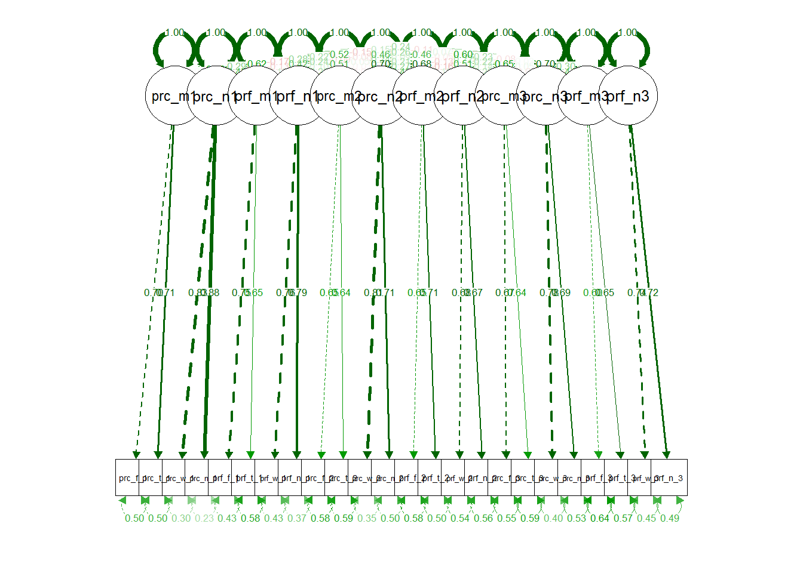
## chisq.scaled df cfi cfi.scaled cfi.robust rmsea rmsea.scaled
## 665.88017314 186.00000000 0.93012912 0.92988159 0.93302455 0.04637638 0.04221100
## rmsea.robust
## 0.04525147
## chisq.scaled df cfi cfi.scaled cfi.robust rmsea rmsea.scaled
## 747.48098303 186.00000000 0.98273020 0.94727999 NA 0.03597639 0.04567481
## rmsea.robust
## NAcormat<- as.matrix(inspect(fitlong_o, "cor.lv"))
corrplot(cormat, method = "color" ,type = "upper", tl.col = "black", tl.srt = 45,addCoef.col = "black",diag = FALSE)
Correlación entre variables latentes w01, w02 y w03
9 Invarianza
- Invarianza entre modalidades en ola 1,2 y 3 (between groups invariance)
- Invarianza entre tratamientos en ola 2(between groups invariance)
NOTA: En vista de que no existe una librería que permita estimar invarianza longitudinal asumiendo indicadores ordinales, las primeras estimaciones las realizaré asumiendo indicadores continuos (estimator=ML).
library(semTools)load(file = "input/data/proc/datalong.RData") # Datos formato long
load(file = "input/data/proc/datawide_123.RData") # Datos formato longdim(dat04)
m_inv_modalidad <- 'perc_merit=~ perc_effort+perc_talent
perc_nmerit=~perc_wpart +perc_netw
pref_merit=~ pref_effort+pref_talent
pref_nmerit=~pref_wpart +pref_netw'
indicators <-c("perc_effort","perc_talent","perc_wpart","perc_netw",
"pref_effort","pref_talent","pref_wpart","pref_netw")
fit.conf=cfa(m_inv_modalidad,data=dat04,group="grupo")
fit.deb =cfa(m_inv_modalidad,data=dat04,group="grupo",group.equal=c("loadings"))
fit.fuer=cfa(m_inv_modalidad,data=dat04,group="grupo",group.equal=c("loadings","intercepts"))
fit.str =cfa(m_inv_modalidad,data=dat04,group="grupo",group.equal=c("loadings","intercepts","residuals"))
fitmeasures(fit.conf)[c("chisq.scaled","df","cfi","cfi.scaled","cfi.robust","rmsea","rmsea.scaled","rmsea.robust")]
fitmeasures(fit.deb )[c("chisq.scaled","df","cfi","cfi.scaled","cfi.robust","rmsea","rmsea.scaled","rmsea.robust")]
fitmeasures(fit.fuer)[c("chisq.scaled","df","cfi","cfi.scaled","cfi.robust","rmsea","rmsea.scaled","rmsea.robust")]
fitmeasures(fit.str )[c("chisq.scaled","df","cfi","cfi.scaled","cfi.robust","rmsea","rmsea.scaled","rmsea.robust")]
anova(fit.conf, fit.deb, fit.fuer, fit.str)## [1] 2236 36
## <NA> df cfi <NA> <NA> rmsea <NA> <NA>
## NA 42.00000000 0.95494030 NA NA 0.07575741 NA NA
## <NA> df cfi <NA> <NA> rmsea <NA> <NA>
## NA 50.00000000 0.94850216 NA NA 0.07422755 NA NA
## <NA> df cfi <NA> <NA> rmsea <NA> <NA>
## NA 58.00000000 0.94733603 NA NA 0.06969449 NA NA
## <NA> df cfi <NA> <NA> rmsea <NA> <NA>
## NA 74.00000000 0.91887795 NA NA 0.07657891 NA NA
## Chi-Squared Difference Test
##
## Df AIC BIC Chisq Chisq diff Df diff Pr(>Chisq)
## fit.conf 42 52068 52578 214.03
## fit.deb 50 52084 52549 246.61 32.579 8 0.00007332 ***
## fit.fuer 58 52081 52500 259.06 12.452 8 0.1321
## fit.str 74 52173 52502 383.70 124.646 16 < 0.00000000000000022 ***
## ---
## Signif. codes: 0 '***' 0.001 '**' 0.01 '*' 0.05 '.' 0.1 ' ' 1configural <- '
# wave 01
perc_merit1 =~NA*perc_effort_w1+lambda1*perc_effort_w1+perc_talent_w1
perc_nmerit1=~NA*perc_wpart_w1 +lambda1*perc_wpart_w1 +perc_netw_w1
pref_merit1 =~NA*pref_effort_w1+lambda1*pref_effort_w1+pref_talent_w1
pref_nmerit1=~NA*pref_wpart_w1 +lambda1*pref_wpart_w1 +pref_netw_w1
# wave 02
perc_merit2 =~NA*perc_effort_w2+lambda1*perc_effort_w2+perc_talent_w2
perc_nmerit2=~NA*perc_wpart_w2 +lambda1*perc_wpart_w2 +perc_netw_w2
pref_merit2 =~NA*pref_effort_w2+lambda1*pref_effort_w2+pref_talent_w2
pref_nmerit2=~NA*pref_wpart_w2 +lambda1*pref_wpart_w2 +pref_netw_w2
# wave 03
perc_merit3 =~NA*perc_effort_w3+lambda1*perc_effort_w3+perc_talent_w3
perc_nmerit3=~NA*perc_wpart_w3 +lambda1*perc_wpart_w3 +perc_netw_w3
pref_merit3 =~NA*pref_effort_w3+lambda1*pref_effort_w3+pref_talent_w3
pref_nmerit3=~NA*pref_wpart_w3 +lambda1*pref_wpart_w3 +pref_netw_w3
# INTERCEPTS: Por cada variable latente, debo fijar el intercepto del primer indicador.
# wave 01--------------------------
perc_effort_w1 ~ i1*1 # Percepcion merito
perc_talent_w1 ~ 1 #
perc_wpart_w1 ~ i1*1 # Percepcion no-merito
perc_netw_w1 ~ 1 #
pref_effort_w1 ~ i1*1 # Preferencia merito
pref_talent_w1 ~ 1 #
pref_wpart_w1 ~ i1*1 # Preferencia no-merito
pref_netw_w1 ~ 1 #
# wave 02--------------------------
perc_effort_w2 ~ i1*1 # Percepcion merito
perc_talent_w2 ~ 1 #
perc_wpart_w2 ~ i1*1 # Percepcion no-merito
perc_netw_w2 ~ 1 #
pref_effort_w2 ~ i1*1 # Preferencia merito
pref_talent_w2 ~ 1 #
pref_wpart_w2 ~ i1*1 # Preferencia no-merito
pref_netw_w2 ~ 1 #
# wave 03--------------------------
perc_effort_w3 ~ i1*1 # Percepcion merito
perc_talent_w3 ~ 1 #
perc_wpart_w3 ~ i1*1 # Percepcion no-merito
perc_netw_w3 ~ 1 #
pref_effort_w3 ~ i1*1 # Preferencia merito
pref_talent_w3 ~ 1 #
pref_wpart_w3 ~ i1*1 # Preferencia no-merito
pref_netw_w3 ~ 1 #
# UNIQUE VARIANCES and COVARIANCES.
# LATENT VARIABLES MEANS: Para cada variable latente fijar la media
# Fix T1 common factor mean to zero
perc_merit1 ~ 0*1
# Freely estimate T2-T3 common factor means
perc_merit2 ~ 1
perc_merit3 ~ 1
perc_nmerit1 ~ 0*1
perc_nmerit2 ~ 1
perc_nmerit3 ~ 1
pref_merit1 ~ 0*1
pref_merit2 ~ 1
pref_merit3 ~ 1
pref_nmerit1 ~ 0*1
pref_nmerit2 ~ 1
pref_nmerit3 ~ 1
# LATENT VARIABLE VARIANCES AND COVARIANCES: correlaciones entre variables latentes
'
fit_conf <- cfa(model = configural,data =wide02)
summary(fit_conf, standardized=TRUE)## lavaan 0.6-5 ended normally after 87 iterations
##
## Estimator ML
## Optimization method NLMINB
## Number of free parameters 158
## Number of equality constraints 22
## Row rank of the constraints matrix 22
##
## Number of observations 1448
##
## Model Test User Model:
##
## Test statistic 1460.610
## Degrees of freedom 188
## P-value (Chi-square) 0.000
##
## Parameter Estimates:
##
## Information Expected
## Information saturated (h1) model Structured
## Standard errors Standard
##
## Latent Variables:
## Estimate Std.Err z-value P(>|z|) Std.lv Std.all
## perc_merit1 =~
## prc_f_1 (lmb1) 1.313 0.010 126.406 0.000 0.958 0.695
## prc_t_1 1.013 0.060 16.823 0.000 0.739 0.636
## perc_nmerit1 =~
## prc_w_1 (lmb1) 1.313 0.010 126.406 0.000 1.134 0.808
## prc_n_1 1.221 0.050 24.307 0.000 1.054 0.834
## pref_merit1 =~
## prf_f_1 (lmb1) 1.313 0.010 126.406 0.000 1.080 0.774
## prf_t_1 0.880 0.050 17.469 0.000 0.724 0.596
## pref_nmerit1 =~
## prf_w_1 (lmb1) 1.313 0.010 126.406 0.000 1.019 0.772
## prf_n_1 1.137 0.051 22.487 0.000 0.882 0.766
## perc_merit2 =~
## prc_f_2 (lmb1) 1.313 0.010 126.406 0.000 0.780 0.627
## prc_t_2 1.091 0.068 16.033 0.000 0.648 0.593
## perc_nmerit2 =~
## prc_w_2 (lmb1) 1.313 0.010 126.406 0.000 0.979 0.736
## prc_n_2 1.130 0.070 16.099 0.000 0.843 0.675
## pref_merit2 =~
## prf_f_2 (lmb1) 1.313 0.010 126.406 0.000 0.737 0.632
## prf_t_2 1.301 0.075 17.407 0.000 0.730 0.648
## pref_nmerit2 =~
## prf_w_2 (lmb1) 1.313 0.010 126.406 0.000 0.766 0.657
## prf_n_2 1.147 0.068 16.985 0.000 0.669 0.625
## perc_merit3 =~
## prc_f_3 (lmb1) 1.313 0.010 126.406 0.000 0.833 0.692
## prc_t_3 1.005 0.058 17.346 0.000 0.638 0.621
## perc_nmerit3 =~
## prc_w_3 (lmb1) 1.313 0.010 126.406 0.000 1.005 0.774
## prc_n_3 1.126 0.060 18.832 0.000 0.862 0.692
## pref_merit3 =~
## prf_f_3 (lmb1) 1.313 0.010 126.406 0.000 0.713 0.649
## prf_t_3 1.230 0.071 17.380 0.000 0.668 0.617
## pref_nmerit3 =~
## prf_w_3 (lmb1) 1.313 0.010 126.406 0.000 0.886 0.761
## prf_n_3 1.154 0.055 21.051 0.000 0.779 0.718
##
## Covariances:
## Estimate Std.Err z-value P(>|z|) Std.lv Std.all
## perc_merit1 ~~
## perc_nmerit1 0.010 0.023 0.414 0.679 0.015 0.015
## pref_merit1 0.302 0.027 11.370 0.000 0.503 0.503
## pref_nmerit1 0.150 0.023 6.628 0.000 0.265 0.265
## perc_merit2 0.266 0.022 11.889 0.000 0.615 0.615
## perc_nmerit2 -0.085 0.023 -3.768 0.000 -0.156 -0.156
## pref_merit2 0.101 0.018 5.488 0.000 0.246 0.246
## pref_nmerit2 0.092 0.019 4.860 0.000 0.216 0.216
## perc_merit3 0.242 0.022 11.119 0.000 0.523 0.523
## perc_nmerit3 -0.084 0.022 -3.727 0.000 -0.150 -0.150
## pref_merit3 0.052 0.018 2.974 0.003 0.132 0.132
## pref_nmerit3 0.123 0.020 6.130 0.000 0.249 0.249
## perc_nmerit1 ~~
## pref_merit1 0.388 0.028 13.904 0.000 0.546 0.546
## pref_nmerit1 -0.077 0.023 -3.350 0.001 -0.114 -0.114
## perc_merit2 -0.066 0.021 -3.229 0.001 -0.129 -0.129
## perc_nmerit2 0.235 0.024 9.620 0.000 0.364 0.364
## pref_merit2 0.134 0.019 6.974 0.000 0.276 0.276
## pref_nmerit2 -0.068 0.019 -3.512 0.000 -0.136 -0.136
## perc_merit3 -0.042 0.021 -2.018 0.044 -0.076 -0.076
## perc_nmerit3 0.295 0.025 11.851 0.000 0.446 0.446
## pref_merit3 0.135 0.019 7.231 0.000 0.288 0.288
## pref_nmerit3 -0.082 0.020 -4.006 0.000 -0.140 -0.140
## pref_merit1 ~~
## pref_nmerit1 -0.118 0.024 -4.900 0.000 -0.184 -0.184
## perc_merit2 0.049 0.021 2.285 0.022 0.100 0.100
## perc_nmerit2 0.072 0.024 2.995 0.003 0.118 0.118
## pref_merit2 0.215 0.021 10.324 0.000 0.466 0.466
## pref_nmerit2 -0.047 0.020 -2.343 0.019 -0.099 -0.099
## perc_merit3 0.092 0.022 4.243 0.000 0.176 0.176
## perc_nmerit3 0.090 0.024 3.753 0.000 0.143 0.143
## pref_merit3 0.204 0.020 10.148 0.000 0.456 0.456
## pref_nmerit3 -0.034 0.021 -1.595 0.111 -0.061 -0.061
## pref_nmerit1 ~~
## perc_merit2 0.101 0.019 5.195 0.000 0.219 0.219
## perc_nmerit2 -0.006 0.022 -0.264 0.791 -0.010 -0.010
## pref_merit2 -0.051 0.018 -2.895 0.004 -0.117 -0.117
## pref_nmerit2 0.327 0.022 14.825 0.000 0.722 0.722
## perc_merit3 0.104 0.020 5.310 0.000 0.211 0.211
## perc_nmerit3 -0.025 0.022 -1.181 0.238 -0.043 -0.043
## pref_merit3 -0.059 0.017 -3.421 0.001 -0.139 -0.139
## pref_nmerit3 0.334 0.022 15.010 0.000 0.638 0.638
## perc_merit2 ~~
## perc_nmerit2 -0.008 0.019 -0.392 0.695 -0.017 -0.017
## pref_merit2 0.195 0.018 10.914 0.000 0.585 0.585
## pref_nmerit2 0.097 0.017 5.806 0.000 0.279 0.279
## perc_merit3 0.261 0.020 12.897 0.000 0.693 0.693
## perc_nmerit3 -0.065 0.019 -3.356 0.001 -0.144 -0.144
## pref_merit3 0.059 0.015 3.831 0.000 0.183 0.183
## pref_nmerit3 0.098 0.017 5.630 0.000 0.243 0.243
## perc_nmerit2 ~~
## pref_merit2 0.195 0.019 10.028 0.000 0.465 0.465
## pref_nmerit2 0.039 0.018 2.148 0.032 0.091 0.091
## perc_merit3 -0.066 0.020 -3.335 0.001 -0.139 -0.139
## perc_nmerit3 0.285 0.024 11.887 0.000 0.500 0.500
## pref_merit3 0.092 0.017 5.231 0.000 0.226 0.226
## pref_nmerit3 -0.032 0.019 -1.677 0.094 -0.064 -0.064
## pref_merit2 ~~
## pref_nmerit2 0.025 0.015 1.706 0.088 0.077 0.077
## perc_merit3 0.097 0.016 5.974 0.000 0.272 0.272
## perc_nmerit3 0.068 0.018 3.821 0.000 0.158 0.158
## pref_merit3 0.198 0.016 12.190 0.000 0.649 0.649
## pref_nmerit3 -0.008 0.016 -0.547 0.584 -0.022 -0.022
## pref_nmerit2 ~~
## perc_merit3 0.077 0.017 4.624 0.000 0.207 0.207
## perc_nmerit3 0.032 0.018 1.729 0.084 0.071 0.071
## pref_merit3 -0.002 0.014 -0.122 0.903 -0.006 -0.006
## pref_nmerit3 0.287 0.020 14.702 0.000 0.729 0.729
## perc_merit3 ~~
## perc_nmerit3 -0.043 0.020 -2.200 0.028 -0.088 -0.088
## pref_merit3 0.201 0.017 11.529 0.000 0.582 0.582
## pref_nmerit3 0.129 0.018 7.291 0.000 0.302 0.302
## perc_nmerit3 ~~
## pref_merit3 0.187 0.018 10.117 0.000 0.450 0.450
## pref_nmerit3 0.086 0.019 4.415 0.000 0.166 0.166
## pref_merit3 ~~
## pref_nmerit3 -0.016 0.015 -1.059 0.290 -0.044 -0.044
##
## Intercepts:
## Estimate Std.Err z-value P(>|z|) Std.lv Std.all
## .prc_ffr_1 (i1) 3.297 0.020 164.061 0.000 3.297 2.393
## .prc_tln_1 3.066 0.029 106.525 0.000 3.066 2.638
## .prc_wpr_1 (i1) 3.297 0.020 164.061 0.000 3.297 2.349
## .prc_ntw_1 3.487 0.028 126.736 0.000 3.487 2.757
## .prf_ffr_1 (i1) 3.297 0.020 164.061 0.000 3.297 2.362
## .prf_tln_1 3.031 0.030 102.363 0.000 3.031 2.495
## .prf_wpr_1 (i1) 3.297 0.020 164.061 0.000 3.297 2.500
## .prf_ntw_1 2.730 0.026 103.746 0.000 2.730 2.369
## .prc_ffr_2 (i1) 3.297 0.020 164.061 0.000 3.297 2.651
## .prc_tln_2 3.105 0.036 86.433 0.000 3.105 2.840
## .prc_wpr_2 (i1) 3.297 0.020 164.061 0.000 3.297 2.480
## .prc_ntw_2 3.345 0.037 90.001 0.000 3.345 2.679
## .prf_ffr_2 (i1) 3.297 0.020 164.061 0.000 3.297 2.829
## .prf_tln_2 2.664 0.048 55.509 0.000 2.664 2.365
## .prf_wpr_2 (i1) 3.297 0.020 164.061 0.000 3.297 2.828
## .prf_ntw_2 2.919 0.043 67.281 0.000 2.919 2.728
## .prc_ffr_3 (i1) 3.297 0.020 164.061 0.000 3.297 2.740
## .prc_tln_3 3.043 0.033 91.359 0.000 3.043 2.962
## .prc_wpr_3 (i1) 3.297 0.020 164.061 0.000 3.297 2.540
## .prc_ntw_3 3.360 0.035 97.079 0.000 3.360 2.698
## .prf_ffr_3 (i1) 3.297 0.020 164.061 0.000 3.297 3.003
## .prf_tln_3 2.742 0.050 55.151 0.000 2.742 2.533
## .prf_wpr_3 (i1) 3.297 0.020 164.061 0.000 3.297 2.830
## .prf_ntw_3 3.002 0.040 75.414 0.000 3.002 2.768
## perc_mrt1 0.000 0.000 0.000
## perc_mrt2 0.077 0.027 2.908 0.004 0.130 0.130
## perc_mrt3 0.186 0.026 7.227 0.000 0.293 0.293
## prc_nmrt1 0.000 0.000 0.000
## prc_nmrt2 0.124 0.029 4.295 0.000 0.167 0.167
## prc_nmrt3 -0.001 0.028 -0.043 0.966 -0.002 -0.002
## pref_mrt1 0.000 0.000 0.000
## pref_mrt2 0.378 0.026 14.769 0.000 0.673 0.673
## pref_mrt3 0.476 0.025 19.175 0.000 0.876 0.876
## prf_nmrt1 0.000 0.000 0.000
## prf_nmrt2 -0.378 0.024 -15.616 0.000 -0.649 -0.649
## prf_nmrt3 -0.427 0.024 -17.828 0.000 -0.633 -0.633
##
## Variances:
## Estimate Std.Err z-value P(>|z|) Std.lv Std.all
## .perc_effort_w1 0.981 0.062 15.727 0.000 0.981 0.517
## .perc_talent_w1 0.805 0.042 18.951 0.000 0.805 0.596
## .perc_wpart_w1 0.685 0.053 12.871 0.000 0.685 0.348
## .perc_netw_w1 0.488 0.044 11.017 0.000 0.488 0.305
## .pref_effort_w1 0.782 0.066 11.911 0.000 0.782 0.401
## .pref_talent_w1 0.951 0.044 21.535 0.000 0.951 0.644
## .pref_wpart_w1 0.702 0.048 14.782 0.000 0.702 0.404
## .pref_netw_w1 0.550 0.036 15.216 0.000 0.550 0.414
## .perc_effort_w2 0.938 0.051 18.465 0.000 0.938 0.607
## .perc_talent_w2 0.775 0.038 20.137 0.000 0.775 0.649
## .perc_wpart_w2 0.810 0.063 12.792 0.000 0.810 0.458
## .perc_netw_w2 0.850 0.052 16.344 0.000 0.850 0.545
## .pref_effort_w2 0.816 0.042 19.295 0.000 0.816 0.600
## .pref_talent_w2 0.735 0.040 18.482 0.000 0.735 0.580
## .pref_wpart_w2 0.773 0.043 17.835 0.000 0.773 0.569
## .pref_netw_w2 0.697 0.036 19.446 0.000 0.697 0.609
## .perc_effort_w3 0.754 0.046 16.332 0.000 0.754 0.521
## .perc_talent_w3 0.648 0.032 20.090 0.000 0.648 0.615
## .perc_wpart_w3 0.675 0.054 12.439 0.000 0.675 0.401
## .perc_netw_w3 0.808 0.046 17.407 0.000 0.808 0.521
## .pref_effort_w3 0.698 0.038 18.416 0.000 0.698 0.579
## .pref_talent_w3 0.726 0.036 20.016 0.000 0.726 0.619
## .pref_wpart_w3 0.572 0.039 14.826 0.000 0.572 0.421
## .pref_netw_w3 0.569 0.033 17.421 0.000 0.569 0.484
## perc_merit1 0.532 0.044 12.096 0.000 1.000 1.000
## perc_nmerit1 0.746 0.045 16.522 0.000 1.000 1.000
## pref_merit1 0.677 0.049 13.783 0.000 1.000 1.000
## pref_nmerit1 0.602 0.040 15.182 0.000 1.000 1.000
## perc_merit2 0.353 0.033 10.627 0.000 1.000 1.000
## perc_nmerit2 0.556 0.045 12.392 0.000 1.000 1.000
## pref_merit2 0.315 0.028 11.229 0.000 1.000 1.000
## pref_nmerit2 0.340 0.030 11.441 0.000 1.000 1.000
## perc_merit3 0.403 0.033 12.101 0.000 1.000 1.000
## perc_nmerit3 0.586 0.042 14.060 0.000 1.000 1.000
## pref_merit3 0.295 0.026 11.403 0.000 1.000 1.000
## pref_nmerit3 0.456 0.031 14.481 0.000 1.000 1.000Invarianza Longitudinal en lavaan https://quantdev.ssri.psu.edu/tutorials/intro-basics-longitudinal-measurement-invariance
https://users.ugent.be/~yrosseel/lavaan/multiplegroup6Dec2012.pdf
Invarianza con indicadores categóricos https://www.ncbi.nlm.nih.gov/pmc/articles/PMC5121102/pdf/nihms757737.pdf
Parametrización tetha: https://groups.google.com/forum/#!topic/lavaan/nfdatPgLLhc
Colapsing categories: https://www.tandfonline.com/doi/abs/10.1080/10705511.2018.1547640?journalCode=hsem20